| [西尾維新] 刀語07 | |
| 西尾維新 | |
| (2015) | |
|
刀語 第七話 悪刀・鐚
西尾維新
|
底本データ
一頁16行 一行42文字 段組１段
「ツルギ」、以後「ツルギ」に置換え注略。
「おれはとがめのために戦うって決めたんだ。それがおれのためでもある」
奇策士とがめと旅を続ける無刀の剣士・
鑢七花を襲う、最大・最強・最悪の試練──。
刀大仏が鎮座する聖地・清涼院護剣寺で、
この世で唯一血を分けた姉との、
血で血を洗う死闘！ 悪刀『鐚』を携え、
七花の前に立ちはだかる姉に、
七花はその剣を振り下ろせるのか──!?
刀語、第七話の対戦相手は、
虚刀流不世出の天才・鑢七実
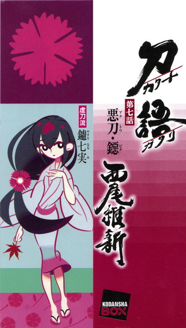
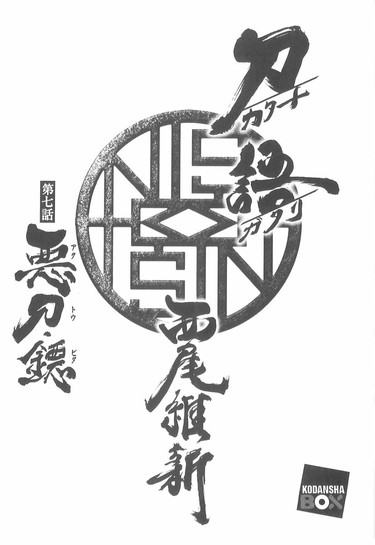
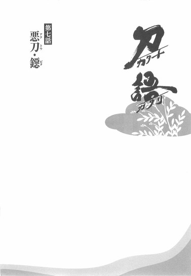
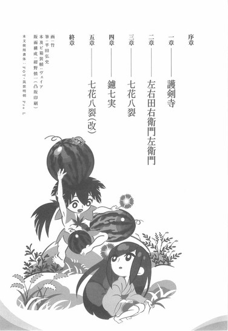
序章
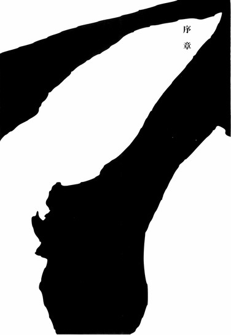
■ ■
ひと月ほど前の話である。
家鳴将軍家尾張幕府直轄預奉所軍所総監督奇策士とがめと虚刀流七代目当主鑢七花が日本海において、ようやく自分達の乗っている船が尾張行きではなく蝦夷行きであることに気付いた頃だった──付言しておくと、一般的に見てふたりがそのことに気付いたのはかなり遅かった──それと時を同じくして。
陸奥、死霊山。
のちに奇策士とがめと鑢七花が向かうことになる蝦夷の踊山、それに江戸の不要湖と並んで数えられる壱級災害指定地域の死霊山──その頂上において、とてもとても気だるげに、ひとりの女が立っていた。
否──
立っていたのはひとりの女だけだった、と言うべきか。
その他にその地にいた者達は──一人残らず地面に倒れていたのだった。ある者はうつ伏せに、ある者は仰向けに、ある者は横向きに──百名を軽く越える白装束の者達が、倒れていた。
彼らは死霊山神衛隊、である。
壱級災害指定地域である死霊山を守護するために、木一本生えぬこの過酷な山で暮らしていた、周辺の大名はおろか幕府とも完全に切れている、しかしかつては出雲の護神三連隊と並び称されたほどに伝統のある、言わば独立軍団──
そんな彼らが、あっさりと壊滅していた。
そして──彼らを壊滅させた張本人であるその女は──
「......はあ」
と、更に重ねて気だるげなため息をついた。
ため息のよく似合う──女である。
自分が通ってきた道に、まるで海外の童話における麺麭屑の如く撒き散らされた白装束の神衛隊のことなど、まるで構う風もなく──
目前の祠を見ていた。
死霊山の頂上に設置されている、小さな祠。
その祠の中に祀られた──刀を。
「......いえ、これは刀と言うより──」
小声で呟く女。
「──しかし......まあ、間違いないかしら。そういう風に感じるし。......だとしたら可哀想ね──こんなところで神様のように特別扱いされちゃって──まったくもう、まるでわたしみたい」
す──と、手を伸ばす。
軽く、祠に触れただけだった。
しかし、それだけのことで──祠は、爆薬でも使われたかのごとく、木っ端微塵に吹っ飛んだ。
中に祀られていた刀を一振り、ただ残して──
「うん。いいわ──気に入りました。前の双刀『鎚』っていうのはいまいちだったけれど──これは軽そうだし、それに手ごろな大きさだし......ふむ、いいでしょう。──いえ、悪いのかしら？」
そこでおかしそうに、女は笑う。
「なんと言っても、悪刀『鐚』なのだから」
戦国の世を実質的に支配した伝説の刀鍛冶、四季崎記紀。
彼が作りし刀は変体刀と呼ばれ、怖れられ──また、奉られた。
そんな変体刀の中でも群を抜いた際物──真打十二本。
完成形変体刀十二本が一本──悪刀『鐚』。
「さて、と──とがめさんの話では、四季崎記紀の変体刀にはそれぞれ、たったひとつの概念に向けて特化された性質があるということでしたね──絶刀『鉋』の場合はそれは丈夫さ、『頑丈さ』でしたっけ......この間の双刀『鎚』の場合は『重さ』......では、この悪刀『鐚』はどうなのでしょうね」
じぃっ、と。
ぎょろり、と。
まじまじ、と。
女は──眼を凝らすようにして、祠の残骸の上に鎮座するその刀に──眼を向ける。
眼を。
その──両のまなこで。
見る──視る──観る──診る──看る。
観察するように──診察する。
「......ふうん。なるほど、理解したわ」
やがて、そう呟く。
「ならば、この刀──尚更わたしに相応しいものとなるようね。刀は斬る相手を選ばない──しかし持ち主を選ぶ。となると、わたしはこの悪刀に選ばれたということになるのかしら？それはいいわね──いえ、悪いわね」
そして女は──手を伸ばし。
その刀を、こともなげに手に取った。
それは、先ほど女が言った通りに──刀と表現することは憚られるかもしれない。少なくとも、日本刀と言ったときに一般的に想定されるような姿ではない。
刀と言うよりは──むしろくない。
しのび道具のくないに似ていた。
もちろん、形にとらわれない刀鍛冶であった四季崎記紀が作る刀に、これと決まった形があるわけがない──賊刀『鎧』や双刀『鎚』の例をあげるまでもなく。
くないの姿でありながら──それは立派な刀だった。
女は──それを感じ取る。
女の小さな手に、細い指に、あつらえたかのようにぴったりおさまる大きさのその刀は──まごうことなき、一本の日本刀だった。
「じゃあ......手土産もできたことだし、いよいよ七花に会いに行くとしますか。とは言え、今頃あのこ、どこで何をしているのかしらね──まあいいわ。先月といい今月といい、これだけ派手に暴れたのだから──そろそろわたしの噂も届いていることだろうし......どこか目立つ場所で待っていれば、きっと向こうから会いに来てくれるはず。七花はともかく──とがめさんならそうするでしょうね」
となると、と女は少し思案する。
「剣士の聖地──護剣寺あたりがいいかしらね。あそこなら、方向音痴のわたしでも問題なく辿り着けるでしょうし......目印としてもわかりやすいかな。風情を気取って『清涼院参り』と洒落込みましょう。そうと決まれば善は急げ──いえ、悪は急げ、かしら」
ふい、と振り返って。
女はくないを片手に、来た道を戻ろうとした──地面に倒れている白装束の者達には、まるで目もくれずに。
と。
そんな女の足首を、つかむ手があった。
倒れている白装束のうちのひとりだった──かろうじて息が、そして奇跡的に意識があった、それはひとりの若者だった。そのまま倒れていればやり過ごせただろうに──彼はそれでも、死霊山神衛隊としての使命を果たさんと、女の足首をつかんだのだった。
「ま......待て」
そして言う。
「そ、それを......持っていくな。持っていかないでくれ......それはこの山に必要なものなんだ......死霊山を守るために、必要なものなんだ......」
「............」
女は、自分の足首を、弱々しい力でつかむ若者を振り向いて──しかし、何も言わない。
ただ──見ている。
見て。
「お、おれたちのためだけに言っているんじゃない......あんたのためでもあるんだ......その刀は、とてもじゃないがひとりの人間に扱いきれるものじゃない......四季崎記紀の変体刀の中でも、最も凶悪な一振りなんだ」
最後の力を振り絞るように──若者は言う。
「た、頼む......他のものなら何でも持っていって構わないから、どうか、その刀だけは──」
「............」
女は。
そんな懇願に対し──深く、深く深くため息をつき。
そして──眼を細め、非常に冷酷な視線を彼に向け。
「何を勝手に、わたしの肌に触っているのですか──この、草が」
つかまれたのと反対側の足で──若者の頭を踏みつけた。
繰り返し。繰り返し。繰り返し。
相手の反応などまるで構わず──踏みつける。
「草が。草が。草が。草が。草が。草が。草が。草が。草が。草が。草が。草が。草が。草が。草が。草が。草が。草が。草が。草が。草が。草が。草が。草が。草が。草が。草が。草が。草が。草が。草が。草が。草が。草が。草が。草が。草が。草が。草が。草が」
程なく──若者の頭部は失われた。
跡形もなく──ただの血だまり、肉だまりと化した。
それでも若者の手は、女の足首をつかんだまま放さなかったが──女は無情にも、足首を軽く振るだけで、その指を払った。
そして、血に染まった草鞋を気にする風もなく、何事もなかったかのように──歩みを再開させた。
最早、彼女の歩みを止められる者は──この山にはいなかった。
否。
それは死霊山に限らず、日本中を探したところで皆無かもしれない。二十年前、七歳の時点で既に日本最強に位置づけられていた彼女は──二ヵ月前、当代随一の剣豪、錆白兵を倒し、二十四歳にしてようやく日本最強を襲名した鑢七花の──姉である。
鑢家家長、鑢七実。
病弱にして天才。
ありとあらゆる森羅万象を呑み込んでしまう、究極の『眼』を持つ、虚刀流の歴史における異形の刀──
卯月には真庭忍軍十二頭領の、真庭蝶々、真庭蜜蜂、真庭蟷螂──真庭虫組の三人を亡き者とし、皐月には蝦夷踊山に住まう凍空一族を殲滅し、そして水無月、この陸奥において死霊山──神衛隊を全滅させ──悪刀『鐚』を手に入れた彼女は、いよいよ四国へと向かう。
弟に会うために──
最愛の弟に、会うために。
「半年振りになるのかしら。ちょっとは成長していてくれると嬉しいんだけれど......うふ。それにしても、いい気分だわ──」
帰り道に散らばった白装束を、意に介することもなく、ぐちゃぐちゃと踏み歩きながら──虚弱体質の天才は呟く。
「──いえ、悪い気分かしら」
邪悪そうな微笑と共に、そう呟く。
■ ■
お待たせしました姉弟対決！
鑢七花対するところの鑢七実！
現日本最強対するところの前日本最強！
虚刀流七代目当主は姉に勝てるのか!?
虚弱体質の天才は弟を打ち破るのか!?
ついに描かれる頂上決戦！
対戦格刀剣花絵巻！
過激感激時代劇！
刀語、七花と七実の第七巻♪
一章 護剣寺
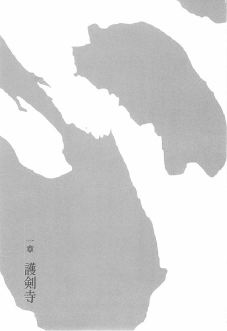
■ ■
土佐の鞘走山清涼院護剣寺と言えば、言わずと知れた聖地である──西から東から、毎年数千人という規模の剣士が『清涼院参り』と言い、この寺を参拝するためにはるばる四国までやってくるのだ。
聖地としての象徴は刀大仏である。
かつて戦国の世を勝ち抜き、天下統一を果たした、今で言う旧将軍が建立した巨大な御仏だ──刀狩令。天下統一直後に出された、国家にある刀を全て蒐集しようという大それた法令であるが、その法令の結果集まったおよそ十万本の刀によって作られた、まさしく剣士の魂とも言うべき大仏である。
それを一目見ようと、剣士達は今日も明日もただひたすらに土佐を目指すのだった。
もちろん、戦乱の終結から、二度とあんな争いを起こさないために平和を祈願して建立されたという謂れのあるその大仏ではあるが、旧将軍の目的がそんなところにはなかったことは今では広く知られている事実である──否、旧将軍の思惑は当時から明白だった。
剣客狩り。
己の政権を揺るがす者が現れぬよう──
刀を狩ったのだ。
剣士という生き物を、この世から廃絶するために。
表向きの理由である大仏建立こそ成し遂げたものの、剣士廃絶というこの目的は、天下統一を成し遂げた旧将軍でも果たせなかったわけだが──しかし。
実際のところ、その剣客狩りという目的でさえ眼くらましだったことを知る者は──さすがに少ない。
表の目的は大仏建立。
裏の目的は剣客狩り。
真の目的は──
四季崎記紀の刀の蒐集にあったのだ。
戦国を支配した、かの伝説の刀鍛冶が作った変体刀千本、その全てを集めようと──旧将軍は偏執的にも、企んだのである。
その企みは九分九厘うまくいった──と言っていいのだろう。事実、元々旧将軍が所有していた変体刀と合わせて、四季崎記紀の変体刀は九百八十八本まで集まった──これを九分九厘と言わずして何を九分九厘と言うのか。
しかし。
残る十二本はどうしても集まらなかった。
どれだけの法令を出しても、どれだけの軍隊を出しても──所有者を突き止めても所在を突き止めても、それは所詮、そこまでの話だった。
それもそのはず。
その十二本は、四季崎記紀の変体刀の中でも札付きの十二本──旧将軍が集めた九百八十八本など、その十二本のための習作に過ぎないと言われるほどの、完成形変体刀だったのだから。
結局、刀集めに失敗した旧将軍はその後力を失って没落してしまい、跡取りもいなかったために、現家鳴幕府へと権力を引き渡すことになってしまったのだが──それでも。
刀大仏を擁するこの護剣寺が、今もなお聖地であることには変わりないのだった。
■ ■
護剣寺は修行の一環として僧侶達に剣術を教えている──否、こう言っては何だが、その剣術の修行こそが、もっとも際立った護剣寺の特徴とも言えるだろう。護剣寺流剣法──聖地で教えられているというだけのことはあって、それは他に並び立つ流派なき無敵の流派として知られていた。清涼院参りをする者の何割かは出家しての弟子入りを望むが──選ばれし者しか教えを受けることのできない護剣寺流剣法の門は狭く、また壁は高く──間違って道場破りのつもりでやってきた粋がった若武者が、足腰立たない状態で叩き出されるという光景も、目にすることは珍しくはない。
護剣寺に住まう僧侶の数はおよそ二百名。
その全てが──剣を武器に使う僧兵なのだ。
普通、僧兵と言えば槍を使いそうなものだが──この護剣寺においては、得物と言えば刀剣以外には考えられないのだった。
文月下旬。
昼間のことである。
護剣寺の境内に五つある道場のうち、最も西にあるひとつ──第五道場。
その第五道場の中に四人の人間がいた。
修行中の僧侶達──ではない。
四人は四人とも、護剣寺からすれば部外者だった。
ひとりは法衣を着てこそいるものの──しかし、その着こなしはいかにも不器用な風で、似合っているとは言いがたい。言いがたいがしかし──たおやかで、ともすれば脆そうなその外見は、似合う似合わないを通り越して、他を圧倒するものがあった。
冷たい眼。
透き通るような肌。
鑢家家長──鑢七実だった。
そしてその正面に、向かい合うように立っているのは──はかま姿で上半身はだかの、図抜けて背の高いぼさぼさ頭の青年である。普段は着用している手っ甲も脚絆も既に外している──臨戦態勢だった。
虚刀流七代目当主──鑢七花である。
姉。
弟。
半年振りの再会を果たした彼と彼女は──今このとき、護剣寺の道場の内において、向かい合っていた。
互いに手ぶらである。
手ぶらであるが──刀を持たない無刀の剣術である虚刀流においては、この状況は、もはや互いに武器を持っているようなものだ。
七花は七の構え──『杜若』に構えていて。
対する七実は構えていない。
否、七花は知っている──姉のこの『構え』のことを知っている。『構えない』という『構え』──虚刀流には本来存在しない零の構え、『無花果』のことを知っている──自分にはとうとう会得できなかった、鑢七実独特独自の構えのことを、その恐ろしさとともに知っている──
七花は七実の動きを見逃さないようにと、瞬きひとつせずに彼女を睨み据えている。一方の七実もまた同様に、冷たい眼で七花を見ていた──
観察し、診察していた。
自分の弟が。
この半年、どう変わり、どう成長し──
──そして、どう堕落したのかを。
「............」
「............」
そんなふたりの姉弟の息の詰まるような試合前の駆け引きを、道場の壁際で見守るふたりの人物がいた──ひとりは言うまでもない、幕府直轄預奉所軍所総監督奇策士とがめである。白き長髪の奇策士は、寺院にはおよそ相応しくない絢爛豪華な衣装を身に纏い、壁にもたれて、板張りの中央で向かい合う、自らの刀、鑢七花と──その姉、鑢七実を見ていた。
と、しかし、そこで──とがめは自分の横にいる男に、
「右衛門左衛門どの」
と、小さく声をかけた。
そう声をかけられた男──右衛門左衛門は、同じように中央のふたりを見ていたのだが、しかし呼びかけられて、とがめのほうへと視線を向けた。
すらりとした体格の男である。
とがめの如き絢爛豪華な衣装でこそないものの──しかしこの男の服装もまた、寺院に相応しいものとは言えなかった。
否、この時代にさえ相応しいとは言えないだろう。
上下ともに洋装である。
道場に上がるときに脱いだのも草鞋ではなく靴だった。
そして極め付きに──右衛門左衛門は顔の上半分を仮面で隠している。
その仮面には大きく縦書きで、『不忍』と記されていた。
「なんだ──奇策士どの」
右衛門左衛門は言う。
やはり小声である。
「そなたはここまでの道案内が役目だったのであろう──だったらどうだ、もう帰ってもよいのだぞ？尾張でそなたの大事なお姫さまが──待っておろう」
「『不要』──そのような気遣いは必要ない、奇策士どの。折角かような舞台に立ち会えたのだ、ここで踵を返すほど、わたしは枯れてはおらん。それとも何かな、奇策士どの──わたしがここに立ち会うことに、何か不都合でも？」
「不都合など」
とがめは不愉快そうに顔を歪めながらも、そう応じる。
「あるわけがない──そなたが何をしようと、そなたの大事なお姫さまが何をしようと──このわたしが不都合に感じることなどあるわけがない。ただ、思いの外そなたらも暇なのだなと、監察所の将来を憂えただけだ」
「『不及』──心配には及ばない、奇策士どの。わたしはこうしている今も──十全に職務を全うしている最中だ。奇策士どのの刀がいったいどのような刀なのか──間近で見るだけで十分にそれはわたしの仕事となる」
「..................」
ちっ、と露骨に舌打ちするとがめ。
しかしそれ以上言葉を重ねずに、視線を、道場中央のふたりに戻した。
むろん、小声で交わしたものとは言え、仕切るもののないだだっ広い道場のことである、とがめと右衛門左衛門が交わしていた会話は、七花と七実の耳にも届いていた。
七花はそれでも身じろぎもしなかったが──
しかし、七実のほうは、
「......はあ」
と、ため息をついた。
例の──よく似合うため息である。
「七花。いい加減にしなさい──観客のおふたりが退屈して、雑談を始めてしまったではありませんか。こんな風に睨み合っていても始まりませんよ──そろそろかかって来たらどうなのです？」
「......姉ちゃんは、いつもそうだよな」
その言葉に──七花は答える。
七の構え『杜若』を崩さないままに。
「いつもそんな風に──上からものを言う。そりゃ、姉ちゃんは強いんだろうけどさ──おれだってこの半年、遊んでいたわけじゃねえんだぜ。去年みたいには──いかない」
「へえ」
七実は微笑する。
崩すような構えは、最初からこの女にはないが──それでも、少し気を緩めたようだった。
「まあ、あなたを見ればそれはわかるけれど──一応、聞かせてもらおうかしら？この半年、いったい何をしていたの？」
「まずは因幡砂漠で、宇練銀閣って剣士とやりあった。こいつはとんでもない居合いの使い手で──抜いた剣の軌道が見えないほどだった」
七実に言われ──七花は語り出す。
「その次は、出雲の敦賀迷彩だ──虚刀流と似通ったところのある剣術、千刀流の使い手で、苦戦させられたもんだ──その次はまた剣士だ。錆白兵......日本最強の剣士だよ。苦戦はさせられたけれどな、ちゃんと勝ったぜ」
「ふうん」
感心した風もなく、七実は相槌を打つ。
「となると、今はあなたが日本最強ということね」
「そうだ。それゆえに、色々と挑戦を受けはしたけどな──まあ、そういうのは数えないことにしようか。次の大きな戦いは、薩摩の校倉必──絶対無双の防御力を誇るそいつを、おれは打ち破った。そして最後に凍空こなゆき──少女でありながらすげえ怪力の持ち主だったぜ。だがおれは怪我ひとつ負わずに勝った！」
七花は姉に対し嘘をついた。
真剣勝負の最中において。
しかしそこはさすがに姉である、
「嘘つきは泥棒の始まりです」
と、あっさり看破し、窘めた。
「つい最近、あなたが左腕を怪我したことくらい、見ればわかりますよ──おそらく最後の凍空こなゆきさん、でしょうね。でもまあ......どうやら完治しているようですね」
「......ともかく」
嘘を見抜かれたことでばつの悪い思いをしたのか、七花の声は多少上擦っていたが、しかしそれでもくじけずに──姉に向かって言った。
「おれはもうあの頃のおれじゃない──去年、姉ちゃんと初めて立ち合ったときよりずっと強くなっている。あんまりなめてると──怪我するぜ」
「怪我をする？」
七実は七花の言葉に、首を傾げる。
「何を甘いことを言っているの──真剣勝負だと言ったでしょう。殺す気で来なさい」
「殺す気って......」
七花が躊躇するような仕草を見せたからだろう。
七実は少し不愉快そうに、
「やっぱり──ぬるくなったのね」
と言った。
「ぬ──ぬるく？」
「まったく......最初から心配はしていたのだけれど。やれやれ......誰のせいなのかしら。宇練銀閣さんのせい......？敦賀迷彩さん、錆白兵さん、校倉必さん、それとも凍空こなゆきさん......？あるいは」
じぃっと。
横目で──七実は、壁際の奇策士を一瞥した。
「あなたのせいなのでしょうか──とがめさん」
「............」
とがめは七実からのそんな視線を受け──
しかし、無言だった。
ただ、その視線から逃げることなく、七実に対して立ち向かっている。
「......度胸はさすがですね。まあいいわ──七花。もう一度言うけれど──これは手合わせでもなければ試合でもないのよ。真剣勝負──殺し合いよ。わたしはあなたを殺すつもりでいく──あなたはわたしを殺すつもりで来なさい。それができないならばせめて、わたしに殺されるつもりで──来るがいいわ」
「......だから、なめるなよ、姉ちゃん」
七花は言う。
「おれが今まで戦ってきた中に、姉ちゃんより強い奴こそいなかったが──それでも今のおれは姉ちゃんよりも強い。真剣勝負なんかしたら、殺されるのは間違いなく姉ちゃんのほうだ」
「だから──そのつもりで来いと言っています」
「今、姉ちゃんが大人しく四季崎の刀......悪刀『鐚』を持ってきてくれれば、おれたちは戦わずに済むんだ。とがめにそれを渡してくれりゃあ、全部丸く収まる。だいたい、どうしておれと姉ちゃんがやり合わなくちゃならないんだ？」
「愚問ね」
七実は笑う。
嘲笑う。
「剣士と剣士が向かい合って──戦わない理由がどこにあると言うの」
「姉ちゃんは剣士じゃないだろう」
「そうかもしれないわね」
七実はすぅ、と一歩、踏み出した。
「わたしは──刀だわ」
「............」
「あなたは違うのかしら？ 七花──それでもあなたは戦う理由が欲しいかもしれないから、わたしはわざわざ、四季崎記紀の完成形変体刀を探して見つけて来たんじゃない。とてもわかりやすい方程式でしょう？『刀が欲しければ』──『わたしを倒すしかない』のよ。父さんはあなたを、自分の所有者よりも姉を優先するような育て方はしていないはずだけれど？」
「......わかったよ」
七花は言う。
「やればいいんだろう、やれば──どうなっても知らねえぞ。おいとがめ」
「ん？」
突然、七花から声をかけられ、驚いたようにとがめは反応する。そんなとがめに七花は、
「合図、頼むよ。仕切り直しだ」
と言った。
そうか、ととがめは受ける。
七花もそうだったが──とがめもまた、このふたりの立ち合いには迷いがあるのだった。だから、そう言われてすぐに応えることができなかったが、しかし、躊躇の末に片手を天井に向けてかかげるようにして──
「いざ尋常に──始めっ！」
と声を荒らげた。
それと同時に──七花は飛び出した。
七の構え『杜若』から、七実に対して一直線に。
否、正確には一直線に──ではないむ
虚刀流『杜若』からの、緩急自在、変幻自在の足運びである。七実が構えもせずに立っているその位置に辿り着くまでに、七花は小さいものまで含めれば合計二十四の牽制を入れていた。
それは、今の七実との、七花の足で五歩足らずの距離を考えれば、考えうる限り最大数の牽制だった。
知っている──
七花は姉の強度を知っている。
だから手を抜くつもりなど毫もなかった。
最初から全力で──全速で、挑むつもりだった。
「七花」
静かな口調で。
向かってくる七花にまるで対応するでもなく──七実は言う。
「真剣勝負の最中に何ですが、久し振りに教育してあげましょう──あなたは間違っています」
じぃっと。
その眼で七花の動きを──観察しながら。
「まず......あなたがこの半年、数々のいくさ場を駆け抜け、わたしより強くなっていたとしても──そんなことに意味はありません。わたしには、この『眼』があります。全てを呑み込むわたしの『眼』──この眼にかかれば、あなたの強さはそのままわたしのものとなる」
鑢七実の天才性の発露──見稽古。
見た技をそのまま自分のものとして習得できる戦闘技術。
その天才性ゆえに、父親、鑢六枝から一切の修行を禁じられた彼女は──しかし、その見稽古の技術を会得することによって、何の努力も何の修行もないままに、六枝と七花との修行をただ見ているだけで──虚刀流の技をすべて、身につけてしまったのだ。
虚刀流でありながら虚刀流でなく。
虚刀流ではないのに誰よりも虚刀流。
それが鑢七実である。
また、その『眼』の力は、他人の戦闘技術を習得するだけにとどまらない──ありとあらゆるものを看破する、そんな眼である。
どんな技も、どんな動きも。
どんな弱点も。
ひとつ残らず見通せる──鑢七実の見稽古！
「......だらぁっ！」
むろん、七花は知っている。
生まれてからずっと一緒に育ってきた姉のことである──その両眼のことを知らないわけがない。二十四回牽制を入れて、それでもなお足りないこと──二十四回の牽制、その全てを見切られていることくらい、わかり切っている。
それどころではない。
姉は七花のことを全て知っている。
虚刀流の技を全て知り──そして、虚刀流の歴史上、誰よりもその技について知り尽くしている。表も裏も、長所も短所も。
七花がこれからどのような技を繰り出そうと、七実はそれに反応し、対処することができるだろう──たったひとつの技を除いて！
虚刀流最終奥義──『七花八裂』。
奥義などと謳ってはいるが何のことはない、実際は七花がひとりで勝手に考えた、歴史も伝統もない、つい半年前に生まれたばかりの技である。
一の奥義・『鏡花水月』。
二の奥義・『花鳥風月』。
三の奥義・『百花繚乱』。
四の奥義・『柳緑花紅』。
五の奥義・『飛花落葉』。
六の奥義・『錦上添花』。
七の奥義・『落花狼藉』。
虚刀流に存在する七つの奥義を同時に繰り出すという派手な技──この技は、まだ七実に、一度しか見せていない！
七花が持つ虚刀流の技の中で七実に通じるものがあるとすれば──この『七花八裂』をおいて他にはない！
そして七花には確信があった。
この技は七実に通じるはずだという確信が。
いくら天才と言えど、いくらいい『眼』を持っていても──ない弱点は見通せまい。
自分ひとりで考えたこの技は。
まさしく虚刀流の最終奥義なのだ！
「虚刀流──『七花八れ......」
「そしてもうひとつ」
と。
今まさに、七花の技が七実に向けて放たれようとしたそのとき──そのときにさえ、七実は平静な口調で、続けたのだった。
「現時点でも──半年前と変わらず、あなたはわたしよりもずっと弱い」
壁際で見ていたふたり。
ある意味、現日本最強対前日本最強という好対戦を、特等席で見ていたふたり──とがめにも右衛門左衛門にも、何が起こったのかは理解できなかった。
七花が奥義を繰り出そうとしたところまでは──かろうじて見えていただろう。
しかし、その先である。
時間を切り取ったかのように──その先の数瞬、果たしてこの道場内において何が起こったのか、わからなかった。
はっきりしているのは結果だけ。
六尺を遥かに越える鑢七花の身体が──道場の天井に食い込んでいた。
羽目板を潰すように──仰向けに、と言うべきなのだろうか、それともうつ伏せに、と言うべきなのだろうか、とにかく、下を向いて、背中から天井に食い込んでいた。
意識はあるようだ。
ただ、呆然とした表情で──真下の姉を、見下ろしている。
姉はそんな弟を、見上げもしない。
ただ。
「......はあ」
と、ため息をついてから──ぱあん、と手を鳴らした。
まさかその音の衝撃で道場全体が軋みたわんだわけでもあるまいが、七花は天井から板張りの床へと落ちてくる──そこはさすがの運動神経、空中で何回か回転し、四つん這いになるようにして、音もなく着地に成功した。
天井を壊しておきながら、背中には傷ひとつない。
頑丈な身体である。
だが──呆然とした表情は変わらない。
「え......？」
と、声が漏れる。
「ね、姉ちゃん──今、何をした？」
「何をしたって......わからなかったわけじゃないでしょう？」
七実は平然と言う。
「あなたのはかまの腰のところを持って、そのまま上に向けてぶん投げたのよ──技でもなんでもないわ。ただの力技よ」
「............」
それは──確かに、わかっている。
壁際で見ているとがめや右衛門左衛門とは違う、された七花にそれがわからないわけではない。虚をつかれこそしたものの、実際、『技ならぬ力技』と言うのならば、七花も使ったことがある──だがそれは『七花だから』使えたはずだ！
同じ虚刀流でも──七実は違う。
七実は、奇策士とがめと体格も体力も違わない。
その上で病弱な分、本来ならば戦える身体でさえないのだ──彼女はただの天才性で、それを補っているに過ぎない！
補って余りある天才性──！
「ば、ばかな──ことを言うなよ。姉ちゃんに、おれをぶん投げられるだけの腕力があるはず──ないじゃないか」
「本当に、頭の巡りが悪いこね──あなたがこの半年間遊んでいたわけじゃないことくらい、自慢されるまでもなくわかっているわよ。だけど七花──わたしだってここに来るまで、別に暇潰しをしていたわけじゃないわ。......凍空こなゆきさんと言ったわね。凍空、と。ならば七花、この怪力に──覚えがないわけじゃないでしょう？」
「............？」
「あっ！」
七花にはそれでもわからなかったようだが、壁際のとがめはそんな風に声をあげた。隣にいる右衛門左衛門が何事かと振り向くほどの、それは大声だった。
「な、七実──そなた、さては凍空一族の村を──！」
「ご明察です。さすがは──とがめさん」
「七花、気をつけろ──七実はこなゆきの怪力を見取っている──いや、こなゆきのような年端も行かぬ童のものではない、凍空一族の、あろうことか大人の怪力を──村を襲うことで会得しておるのだ！」
「む、むらを──？」
七花が瞠目する。
「な、なんで──こなゆきの村は、雪崩で潰されたんじゃなかったのかよ」
「山の頂上で雪崩もないでしょう」
ぴしゃり、と七実は言った。
「生き残りがいたとは想定外でしたが......残しておいた刀は、無事にあなたの手に渡ったようですからよしとしましょう。とがめさん。まあその通りです。凍空の村を滅ぼしたのは──わたしです」
「......死霊山を壊滅させたってのは聞いてたけどよ」
七花は、声を震わせながら──言う。
信じられないことを聞いたように。
信じられないものを見ているように。
「なんで──村を滅ぼす必要があった？」
「は？」
「姉ちゃんなら──刀だけ奪うこともできただろう。死霊山でのこともそうだ──それに、この寺でのことだってそうだろう！どうして、わざわざ全滅させる必要があった？姉ちゃんがそんなことをしたせいで、こなゆきは──」
凍空こなゆきは。
あの少女は──一人ぼっちに。
「変わったことを言うようになったわね、七花」
七実は──またも、ぴしゃりと言う。
「雑草をいくらか引き抜いたところで、やいのやいの言われる覚えはないわ。草むしりはわたしの趣味なのよ。それとも七花、あなた、刀が──斬る相手を選ぼうと言うの？」
「............」
「とがめさん。あなたに七花を預けたのは──失敗だったのかもしれませんね。確か、安心して任せたはずなのに──」
ちらり、ととがめを流し目で見る七実。
とがめはそんな視線にもたじろぐことなく、「その言い振りは筋違いだな」と撥ね除ける。
「わたしの刀をわたしがどのように使おうがわたしの勝手だ──そうではないか？」
「その通り──ですね」
確かに筋違いの逆恨みでした。
七実は、意外とあっさり──そう引いた。
「閑話休題──七花、つまり、そういうことよ。この護剣寺に辿り着くまで──わたしもそれなりの戦火を潜り抜けて来ている。わたしだって半年前のままではないのよ。真庭虫組の方々を始め──凍空一族、死霊山神衛隊、そしてこの護剣寺で──色んな人達と戦わせてもらったわ。そしてそのすべてを──吸収している」
この眼でね──と、七実は言う。
「姉ちゃん、まにわにとも戦っていたのか......」
七花は固唾を呑む。
真庭虫組......それは恐らく、いつか真庭鳳凰が言っていた、行方知れずになっているという真庭忍軍十二頭領の三人──真庭蝶々、真庭蜜蜂、真庭蟷螂のことなのだろう。
つまり、今の七実は──剣法のみならず忍法をも身につけているということだ。
「む──無茶苦茶だ」
そんなの──怖いものなしじゃないか。
七花はゆっくりと起き上がりながら──そう毒づく。
「見稽古っつったって限度があるぞ、姉ちゃん──どうやったら怪力まで見取ることができるんだよ」
「そんな説明をわたしに求めないでよ──できるものはできるんだから仕方ないでしょう。多少、身体の内側をいじったけど、それくらいよ。まあ、強いて言うなら、凍空一族の怪力はあなたのような筋力による怪力とは違い、能力的なものに近いから──といった感じかしら。もちろん、わたしにだって見取れるものと見取れないものがあります」
ただし、と七実は言った。
「あなたの『七花八裂』くらいなら──一度見れば、それで十分」
「............」
「弱点は──一度、自分で使ってみるまではわからなかったけれどね」
「じゃ──弱点？」
「やっぱり気付いていなかったのね。よかったわね、七花──これまでの敵が弱い方ばっかりで。こんな明白な弱点を、誰も見抜けなかったのね──」
「......弱点って......なんだよ」
そうだ。
凍空一族の怪力は怪力として──それだけでは今の現象は説明がつかない。七実がその怪力を披露する前に、七花の虚刀流最終奥義『七花八裂』は既に発動していたのだから──
「それをあなたに教えてあげるために、わたしは島を出てきたのだけれど──腑抜けたあなたを見て気が変わったわ。教えてあげるものですか──」
自分で考えなさい。
そう言って七実は──構えないまま、両手をだらんと下げたまま──虚刀流零の構え『無花果』のままに、無造作な動きで七花に歩み寄ってくる。
「くっ......」
七花は咄嗟に一の構え『鈴蘭』をとるが──焦燥と動揺は隠しきれない。
七実はそんな七花に対し──またも、ため息。
よく似合うため息をつくのだった。
「安心しなさい──今のあなたに対して真剣勝負などと言った、わたしのほうが大人げなかったわ。今のあなたはわたしと立ち合う資格さえもない。確かに半年前よりは腕をあげたようだけれど──それでも、今のあなたを相手にするのには、この小指一本で十分よ」
そう言って──七実は右手の小指だけを立てて、七花の目前にまで迫った。
「..................っ！」
その挑発的な言葉──否。
その屈辱的な言葉に──七花は激昂する。
それは七花のみを軽んじる言葉ではなかった──これまで七花が戦ってきた、変体刀の所有者たち、真庭蝙蝠から始まって、宇練銀閣、敦賀迷彩、錆白兵、校倉必、凍空こなゆきをも愚弄する言葉だった。
姉と言えど──いや姉だからこそ！
それらの言葉は許せなかった。
「思い上がんのも──大概にしろ！」
しかし──その激昂さえ、七実の思うままである。
七花は邀撃の構えである『鈴蘭』から、待ち切れずに七実に飛び掛かってしまった。元より七実の動きはそういうものなのだ──遅過ぎて待ち切れない。しかしそれを熟知しているはずの七花でも──ここまで挑発されて、待ち続けてはいられなかった。
未熟である。
そして七実は──七花がそうした未熱さを残していることくらい──
見ればわかる。
「虚刀流──『雛罌粟』から『沈丁花』まで、打撃技混成接続」
今度は──七花にもわからなかった。
何をされたのか、わからなかった。
もちろん、されている七花にわからないものが、壁際にいるとがめや右衛門左衛門にわかるはずもなく──
ただただ、打撃音のみが激しく響き。
いつつ数えるほどのいとまもなく。
七花の身体は──道場の床に、倒れた。
今度は迷いなく言える──仰向けに。
たん、と。
最後に七実は──七花の腹に、自分の足を載せた。
「......ちなみに、忍法足軽応用編」
七実は言う。
あれだけの打撃をひとつも避けられずに食らいながらそれでもいまだ意識を失わず、どころか、傷ひとつ負っていない──ただ倒れただけの七花に、言う。
「打撃からすべて重さを取り除いておいてあげたわ──わたしがその気だったら、あなたはそうして倒れるまでに、二百七十二回死んでいる」
「............」
意識はある。
意識はあるが──七花は何も言えなかった。
信じられなかったからだ。
今のこの状況が──
二百七十二回死んでいる。
そう言われた。
実際数えたわけではないが──そう言うからには、それだけの打撃が、七花の身体に打ち込まれたということになるのだろう。
その事実に──七花は戦慄する。
「......どうしたの？ 七花」
七実は、腹筋の上から足をどける。
審判役のとがめは何も言わないが、誰がどう見たってこの勝負、決着はついていた。いや、そもそも勝負と言えたかどうかも怪しい。実力の差がありすぎて──勝負は成立していないとさえ言えた。
真剣勝負をするには──早過ぎる。
そう、去年の、不承島における姉弟対決と同様に──
「言いたいことがあれば──言っていいのよ」
「嘘つきは、姉ちゃんのほうだろ」
七花は──促されて、やっと言う。
「何が小指一本しか使わないだよ」
「それはあなたが聞き違いをしたのよ。わたしは『この小指一本以外の全てで十分』と言ったの。言った通り、この小指だけは使わなかったでしょう？」
「..................」
さも堂々とそう言われては、追及する気にもなれない。
だいたい、そんなことで激昂した自分が未熟なのだ。
七花はそんなところを責める気にはならなかった。
そんなことはどうでもいい。
だが──しかし。
「姉ちゃん──今の、どういうことだよ」
「はい？」
「とぼけるな──『雛罌粟』から『沈丁花』までの全部の技を繋ぐなんて無茶苦茶......姉ちゃんの身体でできるわけがねえだろ。姉ちゃんの体力で──二百七十二回もの打撃を繰り出せるはずがないんだ」
「ああ、そのこと」
七実は頷いた。
すっかり忘れていたとばかりに。
「そうね、あなたが疑問に思うのも無理はないわ──いくらわたしの両眼でも、『健康』までは見取れないものね──」
「............」
鑢七実の虚弱体質。
体力もなく──持久力もない。
それはこの天才の、唯一の弱点だった。
唯一の弱点だった──はずだった。
「こういうことよ、七花」
言って七実は──七花に見えるように、法衣をがばっとはだけた。
七花同様に──上半身はだかになる。
筋肉などまるでついていない、その華奢で線の細い、骨の浮き出た青白い身体が──晒された。
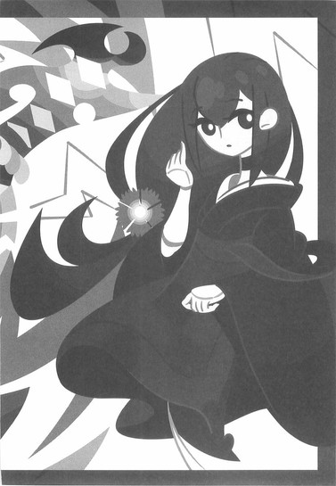
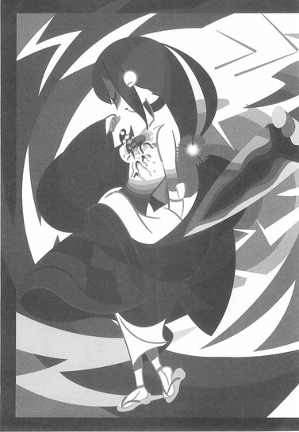
年相応に膨らんだ両の乳房。
その乳房の間に挟まれるような形で、胸部の中央に──一本のくないが突き刺さっていた。
まるで心臓を貫通するように──刺さっていた。
「な......っ！ ね、姉ちゃん！」
「そう取り乱さないで頂戴。四季崎記紀の作りし変体刀──その完成形、十二本が一本、悪刀『鐚』の、これが正しい使い方よ──雷を帯びたこのくないを電極のごとく身体の中央に差し込むことによって──わたしの病は強制的に癒される」
強制的に。
無理矢理に人体を活性化させる──それが悪刀！
苦しみを取り除き、病を癒す！
確かにくないとは漢字で『苦無』と書く──だがしかし！
鑢七実の体内に巣食う一億の病魔まで癒すとなれば──それはもう桁外れとしか言いようがない！
「て、て言うことは、姉ちゃん──」
「ええ、そうよ。あなたの『七花八裂』と違って──わたしにはもう、弱点も死角もありません」
そう言って。
七実は衣服を直し、倒れたまま起き上がろうとしない七花に背を向けて──壁際のとがめや右衛門左衛門には挨拶さえもせず、
「顔を洗って、出直してきなさい」
と言って──護剣寺第五道場を後にした。
鑢七花対鑢七実。
悪刀『鐚』を賭けたその真剣勝負は──とりあえず、次回に持ち越されたのだった。
しかし、その事実に対して希望を持てと言うのは──酷である以上に過酷な、要求だった。
■ ■
壱級災害指定地域、蝦夷踊山において、真庭忍軍十二頭領がひとり、実質的な真庭忍軍のかしらである真庭鳳凰から、死霊山を襲った『何者か』の話を聞いて──奇策士とがめと鑢七花は、今度こそ尾張に戻るはずだった予定を変更し、その『何者か』を追う形で、蝦夷の港から四国、土佐行きの船に乗ったのだった。
最短距離に較べて少し長めの航路を終え、四国の港に辿り着いたふたりを待っていたのは──奇妙な服装をしたひとりの男だった。
七花は初めて見ることになる、洋装である。
足下も足下で、見たこともない履物を履いていた。
そして──仮面をかぶっていた。顔面の上半分を隠す形の仮面──その仮面には、『不忍』の二文字が縦に記されているのだった。
七花はその奇妙な格好に眼が留まっただけだったが──とがめは違った。眼をむいて、それから顔色を変えて──
「何故そなたがここにいる！」
と、いきなりその男を怒鳴りつけたのだった。
男はそんなとがめに、
「『不言』」
と言い返した。
「言うまでもない──奇策士どの。あなたに用があって来たに決まっておろう。こうして会うのも久し振りだ。相変わらず──お美しくていらっしゃる」
「おためごかしなど聞きたくもないわ──七花ぁ──即刻こいつをわたしの前から追い払え！」
「い、いいのか......？」
とがめからの理不尽な命令に、さすがに戸惑う七花。
「『不良』──奇策士どの、今はあなたと争う理由はない。そうではないか？」
「ふん。とぼけおって。そなたのお姫さまが復権したことくらい、わたしが知らんとでも思っておるのか？おおかたそなたも、わたし達の動向を探っておったのであろう──」
「『不外』──まあ、その通りだがな。しかし此度のわたしはただの連絡係だ──様子見というのもあるにはあるが、しかし今はそれどころではない。わたし達にとっても──あなたにとってもだ」
「............？」
「おい、とがめ──こいつ、誰なんだよ」
自分を置き去りに交わされる会話にたまりかねて、とうとう七花はとがめにそう訊いた。とがめはそんな質問へうざったそうに、
「左右田右衛門左衛門......どの、だ」
と言った。
「船中でも散々話した、くだんの否定姫の腹心だ──否、懐刀と言うべきか......『不忍の右衛門左衛門』。誰彼構わずただただ否定しまくるあの不愉快な女が、唯一信用しておる『元忍者』だよ」
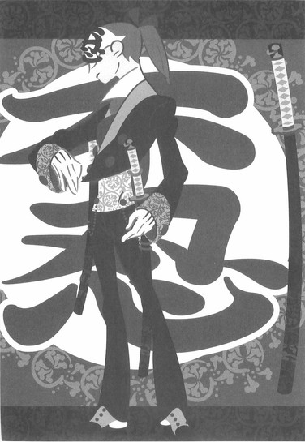
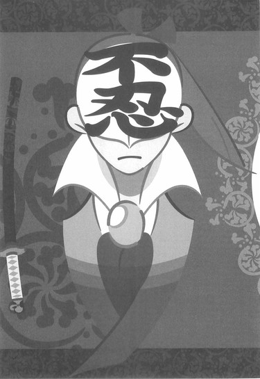
「『不肯』──違うな、奇策士どの。姫さまはわたしのことさえ、信用してはいない。あのかたは忠実なるこのわたしをさえも否定する──だからこその否定姫なのだ。そしてそんな姫さまだからこそ、わたしが仕えるに値する」
「......変わり者が」
「あなたに言われたくはない」
そう言って──右衛門左衛門は歩み出した。
ついて来い、の一声さえなく。
だがこの状況──好むと好まざるとにかかわらず、右衛門左衛門についていかないわけにはいかないようだった。
否定姫からの使い。
それだけでもただごとであるはずもないが──まず間違いなく、右衛門左衛門がこの港で待っていたことと死霊山を襲った『何者か』のことは、関係しているはずなのだから。
右衛門左衛門からそれでも距離を置いて──右衛門左衛門が妙な動きを見せたらすぐに反応できるように、用心を怠らず、背中にとがめを庇うようにしながら──七花は歩いた。
港を外れ、街道に乗ったところで、ようやく右衛門左衛門は口を利いた。
「奇策士どのがなかなか尾張に戻ってこないから──姫さまが寂しがっていた」
「......適当なことを言うでない。右衛門左衛門どの、冗談の言い方など、どこで覚えた？左遷された先に話のわかる者でもおったのか？」
「『不在』──わたしのことをわかってくれるのは姫さまだけだ。姫さまが寂しがっておったのは本当だ──早く尾張に戻って、その白髪とお顔を見せてあげてくれ」
「......そんなくだらんことを言うために、そなたは四国まで来たのか？」
「まさか」
「しかししのびのそなたが、まさか清涼院参りでもあるまい」
「『不忍』──奇策士どのが先ほど仰った通りだ。わたしは忍者ではない、元忍者だ。こうして仮面にしっかり書いてあるだろう。今では剣士を生業にしている──そんなわたしが護剣寺を詣でたところで、不自然ではあるまい」
確かに、右衛門左衛門は洋装には不似合いな刀を腰に差していた。
大小二本。
七花はもちろん、港の時点から敏感にその刀の存在に気付いてはいたが──
──変体刀じゃないな。
何の共感覚もない。
普通の刀である。
「不自然ではあるまいとは......右衛門左衛門どの、まさかそなた、本当に清涼院参りに行くつもりなのか？」
「結果的にはそういうことになるな。奇策士どの──姫さまからの伝言は伝言としてだな、あなたにはまたしても上意がくだったということだ。刀集めの旅のついでと言うのかな......」
「......死霊山での事件のことを言っておるのか？」
「まあ、そうだ。その下手人を捕らえよ、場合によっては殺せ──ということだな。その下手人はどうやら、奇策士どのが今集めている四季崎記紀の完成形変体刀の一振りを持っているようだ──つまり、あなたの仕事ということだ」
「言われるまでもないわ」
とがめは言う。
「わたし達はそのために四国に来たのだ。わかっておるとは思うが、これからその『何者か』──下手人を探そうと思っておったところだぞ」
「『不要』──探す必要はない。下手人の所在ならば既につかめている......だからわたしが来たのだ。奇策士どのに余計な手間を取らせずともよいようにな」
「ほう......相変わらず仕事が早いな」
「『不出』──褒めても何も出ないぞ、奇策士どの。何度となく姫さまを失墜させた恨みを、わたしは忘れたわけではない」
「そうであろうな──何なら、この場でわたしを殺してみるか？七花に勝てると思うならだが」
「他力本願もそこまでくれば立派だな──『不為』。生憎、錆白兵に勝てるような剣士を相手に正々堂々と勝負を挑むほど、わたしは自分の腕に自信を持っていない」
腹の探り合いのような会話が続く。
こうなると七花は退屈である。
否定姫のみならず、どうやらこの右衛門左衛門とも、とがめは因縁があるようだが──さすがにそこまで口を挟む気にはなれない。
──しかし。
真庭忍軍といい錆白兵といい否定姫といい......。
俺の所有者はとにかく敵の多い女だ、と七花は思う。
実は嫌われ者なのだろうか。
まあそれもこれも、とがめが幕府内においてなさんとしていることを考えれば、無理からぬことなのかもしれないが。
「で。その下手人とやらはどこに隠れておったのだ？」
「『不隠』──隠れてなどいない。堂々としたものだ──ふてぶてしくもその下手人は、剣士の聖地、鞘走山清涼院護剣寺に居座っておる。......否、清涼院護剣寺を──乗っ取ったと言うべきか」
「の──乗っ取った？」
どういう意味だ、ととがめは問う。右衛門左衛門はしかし、「言った通りの意味だ」と、すげなく答えるだけだった。
「護剣寺に住まう僧侶を半数ほど惨殺......もとい、斬殺してな。無理矢理客分として居座っている──らしい」
「......まあ、死霊山を半刻で壊滅させたという化物のことだから、それくらいはできるのだろうが......しかし護剣寺か......。それはまずいな」
とがめは言う。
「まずいって──何がだよ、とがめ」
「いや、護剣寺は寺院だけあって、境内には女人禁制の区域もあるのだ。客分扱いということは、その下手人──寺院の奥にまで這入り込んでおるのだろう。ならばわたしには手出しできんということになる」
「『不及』──その心配には及ばない、奇策士どの。女人禁制のしきたりなど、今の護剣寺にはあってなきがごとしだ。なぜならば、武力によってかの護剣寺を制圧したその下手人、化物もまた──女なのだからな」
「......そ、そうなのか？」
「鑢七実」
左右田右衛門左衛門は。
振り返り、七花を見据えるようにして──そう言った。
「それが、壱級災害指定地域、死霊山を壊滅に追い込み、今、剣士の聖地たる清涼院護剣寺を制圧している──悪刀『鐚』の所有者の名だ」
「え......？」
七花はそれを聞いて──唖然となった。
ともあれ。
鑢七花が護剣寺の第五道場において、感動の姉弟再会を果たすのは──この三日後のことである。
二章 左右田衛門佐衛門
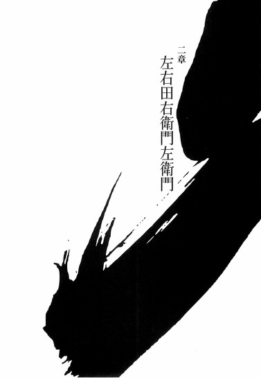
■ ■
尾張城下町の一角にある、雑木林に囲まれた武家屋敷──呼ぶ者によっては否定屋敷とも呼ばれているその屋敷の一室で──ひとりの女が、何をするでもなく、直立して佇んでいた。
まるで何かを待っているように。
そんな女に向けて、天井裏から、
「姫さま」
と、声が掛かる。
「ただいま戻りました──左右田右衛門左衛門にございます」
天井裏からのそんな声に、女は、「遅い」と、第一声から、否定的なことを言うのだった。
否定姫。
家鳴将軍家尾張幕府直轄内部監察所総監督──
本名不明。
「いつもいつも、本当にいつまで待たせる気よ──この愚か者」
「......申し訳ありません」
「それで？ 四国はどうだったのかしら」
早速否定姫は本題に入る。
待つことを生業とするこの女が、珍しく待ちかねたかのように。
「死霊山にまつわるばかげたあの噂は──どこまでが真実だった？」
「は。それが──全て」
「全て？ 全て──嘘だった？」
「全て本当──でした」
天井裏からの声──右衛門左衛門は言う。
「いえ、死霊山のことだけに限りません。ご報告申し上げるに、戸惑いをおぼえるばかりなのですが──鑢七実という、虚刀流の姉......はっきり言って、化物です」
そして右衛門左衛門は、自分が四国──土佐の鞘走山、剣士の聖地、清涼院護剣寺で見聞してきた一部始終を、あますところなく自分の上役──否定姫へと報告する。
最初こそ、荒唐無稽なその話を愉快そうに聞いていた否定姫の表情も──最後の段に至っては、曇っていかざるを得なかった。
うんざりした顔である。
「......あんたとは、もう随分と長いけどさ。わたしの数多い自慢の中のひとつは、そんなあんたに対して一度として優しい気持ちになったことがないっていう驚きの事実だったんだけど......、今初めて、わたしはあんたに同情しちゃったわ。そんなばかな話をわたしに報告しなくちゃならないなんて──可哀想にね」
「勿体ないお言葉にございます」
畏まった右衛門左衛門の声。
否定姫は、眉間を指で押さえるようにして、
「凍空一族を全滅──ですって？」
と言う。
「どうやったらそんなことができるのよ......、その時点じゃ、そのおねえちゃんは悪刀『鐚』を所有してはいなかったんでしょう？」
「ですから──悪刀『鐚』のない状態でも、既に十分化物だったということです。お話しした通り、真庭忍軍の忍法もいくつか習得しているようですし──」
「ということは、死霊山の神衛隊の技術も、また護剣寺の坊主さん達の剣術もまた、見取っているということね......戦えば戦うほど強くなるというわけか。いえ──戦うまでもなく、見るだけで──」
「そういうことになります」
神妙に同意する、右衛門左衛門。
「これは──少しばかり、まずい事態ではないかと」
「少しどころじゃないわよ──あの不愉快な奇策士の計画が乱れるのは大いに結構だけれど、それでこっちまで巻き添えを食うんじゃたまったもんじゃないわね。何？この計算違い。本当に──あの女の奇策には振り回されっぱなしじゃないの。成功するにせよ失敗するにせよ──虚刀流を表の世界に引っ張り出したはいいけれど、ついでにとんでもないものまで引っ張ってきちゃったというわけか」
「しかし──鑢七実もまた、虚刀流です」
「でも、今は刀を使っているんでしょう？」
否定姫は言う。
「ならば──もう虚刀流とは言えないわ」
「............」
「しかし、実際のところ、どうだった？ 鑢七花と鑢七実の対決──決着は持ち越されたということだったけれど、七花くんのほうに勝ち目は少しでもあるのかしら？」
「ありません」
あっさりと、右衛門左衛門は断定した。
それは迷いのない返答だった。
「鑢七花に限りません。あの女には──誰も勝てませんよ」
「たとえば──錆白兵でも？」
「はい。錆は確かに天才でしたが──その天才性において、鑢七実に圧倒的に劣ります。仮に......そんな事態を想定することさえ困難ですが、仮にあの鑢七実を越える天才性を有する戦士が彼女の前に現れたとしても──現れた時点で、その『強さ』は彼女の『眼』に呑み込まれてしまうでしょう」
「見稽古──か」
見る。
見切り。
見抜き。
見定め。
見通し。
見極め。
見取る。
「戦いは相性である、と言います──つまり強さと弱さは表裏一体であり、どんな強い相手とも戦いようはあるという意味ですが......しかし、こと鑢七実に関しては、この格言は通じません。その相性さえも、彼女は取り込んでしまうのですから」
「冗談じゃないわよね」
否定姫は笑う。
確かに、もう笑うしかないような現状だった。
「ちなみに、参考までに聞かせてよ。あんたなら──鑢七実相手にどう戦う？」
「戦いません」
右衛門左衛門は、否定姫からの意地悪な質問にそう答えた。
「勝てる要素がひとつもない相手に挑むほど、わたしは愚かではありません──それよりはむしろ、争いを回避する方向へ働きかけようと思います」
「なるほど。元忍者らしいお答えだわ。だけど、それでも戦わなければならない状況に陥ったら、どうする？」
「時間を稼ぎますね」
右衛門左衛門は言う。
「あなたが逃げられるだけの──時間を」
「花丸」
否定姫はそう言って──思案する。
そんな表情を見せる。
「まあ、実際、戦いは避けたいところだけれど──鑢七実が悪刀『鐚』を所有している以上、無視はできないのよね。......生命を強制的に活性化させるくない──確かに聞いてはいたけれど、恐ろしい限りよね。使いようによっては不死不滅の軍隊が作れるってわけか。しかしだからこそ、ひとりの人間が使い切れるような特性じゃあ、本来ないわよね。鑢七実も、誰からも聞くことなく、よく悪刀の使い方を理解したものよ......それも見稽古って奴なのかしら？」
「恐らくは」
しかし、と右衛門左衛門は言う。
「いったい──その悪刀は、どのような仕組みになっているのでしょうか？生命を活性化させると、言うは容易いですが──」
「四季崎記紀の変体刀に今更説明を求めるなんて、あんたもやっぱりどっかずれてるわよね──まあ、強いて言うなら針治療みたいなもんなんじゃない？」
「はり──治療ですか」
「薄刀『針』じゃあ、ないけどね」
死霊山ではね──と、否定姫は言う。
「山自体を活性化させるために、その悪刀を奉っていたのよ。もっとも、山に突き刺しはしていなかったみたいだけれど......神衛隊と言えど、悪刀『鐚』の正確な使い方まではわかっていなかったのね。それを見抜いたってのはさすがは天才様って感じなのかしら。ただ──奉るだけでも効果は十分にあったはず。だから──その悪刀が失われた今、かろうじて命脈を保っていた死霊山はもう、滅ぶしかないでしょうね」
「壱級災害指定地域の──死霊山が、ですか」
「踊山の凍空一族も潰しちゃうし......こうなったらついでに、江戸の不要湖もなんとかしちゃって欲しいところね」
「......お戯れを」
「戯れ？ まあ、確かにそうかもね──けど、これが冗談で済むかどうかは微妙なところよ。そんな化物がそんな凶悪な刀を提げてしまったのだから──最悪、幕府の転覆さえありうるわ。鑢家ってのは、島流しの目に遭わされているんでしょう？幕府を恨んでいてもおかしくはないわ」
「そうならないように──奇策士が動くでしょう」
「あの女に期待しちゃ駄目よ──あの女は所詮、自分のことしか考えちゃいないんだから。天下国家のためなんて言って刀集めをしちゃいるけれど、あくまでも自分の出世のことしか考えてないんだから。そういやまだ訊いてなかったわね。元気だった？あの不愉快な女」
「はい。護剣寺までの道中は、うるさいほどでした──偶然を装って何回か地味に蹴られました」
「子供みたいな真似をするわね......」
「さすがに道場での勝負の後は、大人しくなっていましたが......あの女のことです、すぐに立ち直るでしょう」
「そして策を練る──か」
否定姫は言う。
「まったく、健在そうでなによりだわ。まあそうでなければ張り合いもないというものよ。けれどその状況で──どんな打つ手があるのかしらね。わたしにはまったく予想もつかないけれど......」
「まずは差しあたって、鑢七実から示唆された、虚刀流の最終奥義の弱点探しをするのではないでしょうか」
「弱点探し？ ああ......『七花八裂』の弱点探しね。そんなの簡単よ。あんたの話を聞いていたら、わたしにも推測が立ったくらいだもの。あの女なら、すぐに気付くでしょう」
「わ──わかるのですか」
否定姫の言葉に、驚く右衛門左衛門。
それに対し、「これは期待ってわけじゃあないけれどね」と、否定姫は自慢げにもならない。
「あんたのこれまでの報告と合わせて考えればね──けれど、そんな弱点......補強したところで克服したところで、あまり意味があるとは思えないわね。その、鑢七実の圧倒的な強さの前では──」
「確かに......わたしにはその弱点とやらの予測はつきませんが、鑢七花はもっと根本的な対策を打たなければ──姉を打ち破ることはできないでしょう」
「対策ではなくて、奇策でしょ」
幾らかの皮肉を込めた口調で、否定姫。
「奇策しか練らないから奇策士──よく言ったものだわ。自分の刀の顔を立てたのかどうか、一回目の姉弟対決は口を出さずに見守ったみたいだけれど......次はそうはしないでしょうね。必ず、何らかの奇策を打ってくるはず──仕上げをごろうじろって感じかしら。けれど、ひとつだけわたしにもわからないことがあるわね。虚刀流の姉──鑢七実は、いったいどういう理由で──何がしたくて、護剣寺に立てこもるなんて、のっぴきならないことをしているのかしら。聖地を巡っての戦争というのは異国じゃよくあることだけれど、この国じゃ滅多に聞かないしね。それがわからないことにはこの件──もうひと波乱ありそうな感じなのだけれど」
「......戻るべきでしょうか？」
右衛門左衛門は、否定姫に問う。
「もしも奇策士の奇策によって鑢七実を打ち破ることができるとするなら──わたしはその場面を目撃しておくべきでしょう」
「そうね......いえ、やめておきましよう。あの女はわたしやあんたのことを、相当嫌っているからね──気が散っちゃいけないわ。普段ならあの女に対してこんな気遣いをするなんてあり得ないけれど、今回だけは特別ということにしておきましょう。......それでも万に一つも勝ち目はないだろうけれど、あの奇策士はいついつでも、その一つをつかんできた女──なのだから」
「気が散る、と言えば」
右衛門左衛門は、そこで思い出したように言った。
否。
元忍者の彼が──それを忘れていたはずもないのだが。
「同じく、奇策士にとっての天敵的存在──真庭忍軍の動きも気に掛かります。奇策士の話によれば、どうやら一時休戦にも似た同盟を締結したとのことですが──」
「ああ......真庭忍軍ね。でも十二頭領のうち、既に半分以上がいなくなっちゃってるんでしょう？えっと、鑢七実が虫組の三人を全滅させて──しかしとにかく全滅させたり壊滅させたりするのが好きな女ね──先月、蝦夷踊山で更にふたり、亡き者にされているから......残りは四人？だっけ？......もう彼らについてはほっといてもいいんじゃないの？」
「そうはいきません。まだ──真庭鳳凰が残っています」
おざなりな風な否定姫の言葉に、右衛門左衛門は神妙な口調で言う。
「かの忍者が残っているうちは──真庭忍軍はどれだけ人数が減ったところで、脅威のままです」
「あっそ。まあ他ならぬあんたがそう言うんだから、そうなんだろうけど──それにしたって、その同盟が有効なうちは安全でしょ。少なくとも四国の話に噛んでくる心配はないはずよ──邪魔にならないうちは黙認でいいでしょ。で、あんたはもちろん、あの不愉快な女に、さっさと尾張に戻ってくるように伝えてくれたんでしょうね？」
「はい。鑢七実──悪刀『鐚』の件が片付き次第、今度こそ尾張に帰ってくるでしょう」
しかし。
その可能性は著しく低いだろう。
鑢七実──悪刀『鐚』の件に、片付きようなど、果たしてあるのかどうか。
右衛門左衛門が抱いたそんな疑念を知ってか知らずか、否定姫は、
「そう」
と言った。
「ならばわたしは──待ちましょう」
■ ■
蝦夷の踊山や陸奥の死霊山、江戸の不要湖とは違い、災害指定こそされていないものの──富士山の裾野に広がる樹海もまた、この時代の日本においては立ち入る際に覚悟を必要とする、危険地帯として知られていた。
樹海。
文字通りに樹木の海──である。
林や森とは明確に区別される──動物ではなく植物が支配する地区。
高温多湿のその過酷な環境の中、汗ひとつかかずに歩く──ふたりの人間がいた。
ひとりは若い風貌の男だった。
すらりとした長身で、伸ばした黒髪を真っ直ぐに下ろしている──無表情だが、眼光だけがやけに鋭い。
もうひとりは小柄な、まだ童子と言っても通用するくらいに幼く見える男である──おどおどと周囲を警戒するようにしながら、前を歩く無表情の男の背後をついていくのだった。
これだけだと何の共通点もなさそうなふたりではあったが──しかしその服装だけは共通していた。
袖のないしのび装束。
ふたりとも──全身に太い鎖を巻いていた。
そう。
前を歩くは真庭忍軍十二頭領がひとり、真庭鳳凰。
後ろを歩くは同じく真庭忍軍十二頭領がひとり、真庭人鳥だった。
『神の鳳凰』──そして『増殖の人鳥』が、一緒になって──富士裾野の樹海の内を歩んでいるのだった。
「今頃は──どうなっているのかな」
と。
唐突に鳳凰が喋りだした。
びくぅ、と人鳥は、その言葉に反応する。
「な、なななな、何が......でしょう」
「いや、四国のことだよ。奇策士と虚刀流は、そろそろ四国、土佐の清涼院護剣寺に辿り着いた頃だろう──」
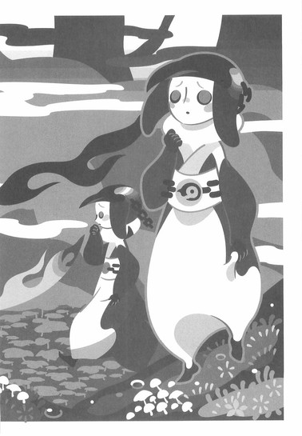
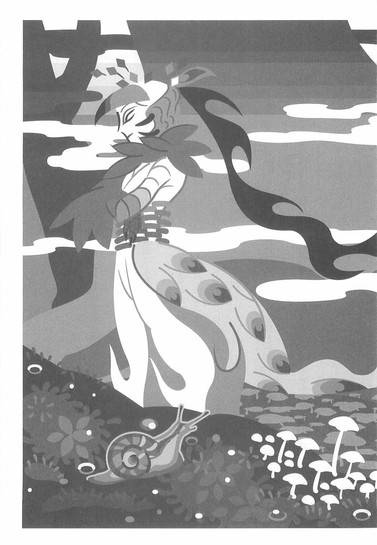
「姉弟対決......、ですね」
人鳥は言う。
「しかし──思いもしませんでしたね......、死霊山を壊滅させた化物が、まさか虚刀流の姉だっただなんて......」
「死霊山だけではない。踊山もまた──虚刀流の姉、鑢七実によって、滅ぼされていたのだろう。おぬしがあの後、集めてきた情報によればな」
「は、はい......」
「それだけではない。鑢七実は我ら真庭忍軍の十二頭領、その虫組を全滅させている──らしい。それもまあ、おぬしが集めてきた情報だから、我が偉そうに言うことではないのだが──まったく、人鳥。おぬしの情報収集の能力の高さにはこの我といえども舌を巻くばかりだ」
「と、と、とんでも......とんでもありません」
がくがくと。
褒められた感動と言うよりは恐怖に覚えるように身体を揺らしながら──真庭人鳥は俯く。
「前日本最強──鑢七実か」
そんな人鳥の反応には慣れているのだろう、鳳凰はさして構う風も見せずに、険しい樹海を歩み続けながら、「それにしても」と言う。
「まったくもって、錆白兵どころの話ではないな。おぬしの集めてきた情報がすべて真実だとするのなら、はっきり言って打つ手がない」
「残念ながら......、全部──真実です」
おどおどした口調でこそあったが──人鳥はきっぱりと断言した。
「護剣寺も──今頃は、彼女の制圧下、でしょう」
「まさしく剣士の聖地に相応しい人物の登場と言えるだろうな──いや、人物ではなく化物か。さてさて、あの奇策士はどうするのか。奇策だろうと秘策だろうと、本物の天才相手には決して通用しないというのが、戦う者の常識だが」
「き、奇策士は──戦う者ではありませんから」
人鳥は言う。
「何かいい手を考えるかもしれません......と言うより、ぼくたちとしては、そう願うしかないでしょう......、現在残っている真庭忍軍の頭領の中に、彼女に太刀打ちできる者は......鳳凰さまを含めても、ひとりもいないかと」
「はっきりと言うではないか」
さすがに鳳凰は苦笑する。
「まあ、しかしおぬしの言う通りだな──狂犬の奴が生きていてくれれば、また話は別だったのだろうが......いや、あるいは狂犬でも無理だったかもしれぬな......」
真庭蝙蝠──冥土の蝙蝠。
真庭白鷺──逆さ喋りの白鷺。
真庭喰鮫──鎖縛の喰鮫。
真庭蝶々──無重の蝶々。
真庭蜜蜂──棘々の蜜蜂。
真庭蟷螂──首狩りの蟷螂。
真庭狂犬──伝染の狂犬。
真庭川獺──読み調べの川獺。
「真庭忍軍十二頭領が、いまや残り四人だ。さすがにこれ以上、危ない橋は渡れない──化物退治は奇策士に頼るしかないというわけだ」
「鑢七花は、確かに強いですが......しかし、天才を相手取れるかどうかとなると──厳しいでしょうね」
「骨肉の争いか。......しかし、ここで下手に転んで、その化物の姉が奇策士側の勢力となるような事態に至れば──いよいよ我ら真庭忍軍には後がないな」
「それは......ないでしょう」
少し考える風にしてから、人鳥は言った。
「想像するに──奇策士と鑢七実は、決して相容れませんから」
「それは──そうかもしれんな。そうか、おぬしは奇策士と面識があるのだったな──ふむ。それに否定姫とのこともある──まあいずれ、今の我らにできることは限られている。別行動を取っている海亀と鴛鴦も、頑張ってくれていることだろう。奇策士との同盟が有効なうちに、我らは我らでできる限り、刀集めに勤しむだけ──おっと」
鳳凰が、そこで足を止めた。
富士山麓付近の──ひとつの風穴の前において。
「ここのようだな」
「は、はい......」
「さすがは『増殖の人鳥』──その情報には千に三つの誤りもない、か──」
「いえ......今回ばかりは、鳳凰さまの左腕があってこその結果です」
人鳥はそう言ってから、「ああ、いえ──」と、ひとり、首を振った。
「正確には──川獺さまの左腕ですか」
「うむ──」
そう言われて、鳳凰は自らの左腕を確認するように──ぐるりと回した。
「──さすがは『読み調べの川獺』の左腕。まだ引っ付けて間もない腕だ、如何せん精度が気になっていたが──いらぬ心配だったな」
真庭忍軍十二頭領がひとり、真庭川獺──
先月、蝦夷踊山において落命したしのびである。
物体に残る残留思念を読み取るというのが、彼の使う忍法だった──名付けて忍法記録辿り。
そしてそれは、今は鳳凰の忍法だった。
現在の彼の左腕は──真庭川獺の左腕なのだ！
「忍法命結び──この間の海賊の腕は、役立たずだったからな......、それに較べて川獺のこの腕はかなり使い勝手がいい」
「川獺さまも......本望でしょう。落命したのちも鳳凰さまの一部となり、生き続けることができて──」
「ならばよいのだがな」
鳳凰は悩ましげに言う。
要するに、彼らふたりがここに辿り着いたのは──真庭人鳥の情報網と、今は亡き真庭川獺の忍法記録辿りとの合わせ技の為せる技なのである。
先月、奇策士とがめに対し、真庭狂犬の暴走の穴埋めとして、真庭川獺の死をもって同盟の再締結をなした真庭鳳凰だったが──そこにはそういう保険があったのだ。
真庭川獺が死んだところで。
その忍法を、真庭鳳凰は受け継ぐことができたのだ──つまり。
奇しくも元忍者、右衛門左衛門が予想した通りに──真庭忍軍健在なり、である。
未だ、幕府の刀集めの脅威として──
「では行くか。この風穴の中に──あるのだろう」
「ええ」
確信があるように頷いて──そこからは人鳥が先行する。鳳凰はその後ろを、腕組みをしてついていくのだった。
「しかし......解せんな」
風穴の中に這入ってからも、ふたりは平然と歩く。
足場を確認することも、道順を確認することもしない。まるでその風穴洞窟を知りつくしているかのごとく──普段通りの速度で移動する。
「解せんとは......な、何がですか？」
「いや、その鑢七実のことだ──おぬしの調べでは、その天才......とんでもない『眼』を所有しているということだったな？」
「は、はい......見稽古、と言うらしいですが......、どんな技であれどんな動きであれ、一度見れば大抵は、二度見れば磐石に──見切ってしまうそうです。剣法であれ忍法であれ、まるで等価に......恐らくは真庭虫組の忍法は、すべて見取られていることでしょう」
「ふむ。だろうな。しかしだ、人鳥──それを我は、不自然だと思うのだ」
「不自然とは」
「川獺の忍法を我が物としたこの忍法────我の忍法命結びは、種類こそ違え、まあその鑢七実の見稽古と通じるところがあるだろう。あるいは狂犬の、忍法狂犬発動も──他人の身体と記憶を乗っ取るという意味では、似通ったものがある。そして、他人を真似て姿形を変容しうる、蝙蝠の忍法骨肉細工に関しては言うまでもないだろう」
「はあ......？」
鳳凰の言いたいことが通じないらしく、人鳥は困ったような顔をする。
忍法命結び。
忍法狂犬発動。
忍法骨肉細工。
そして──鑢七実の見稽古。
確かに、それぞれの技術に、重なるところはあるが──
「むろん、細部においては一緒にするわけにはいかん──我の命結びは相手を殺すことが前提だし、狂犬発動は自分が死んでいることが前提だ。骨肉細工に至っては、真似られるのはあくまで器のみ──どれも、鑢七実の見稽古には及ばん」
「......ですね」
それほど、並外れた技術なのだ。
鑢七実の見稽古は。
「しかし、あえて──通じるところのある忍法を使う者として疑問を呈するならば、鑢七実の見稽古には......さして意味があるとは思えんのだ」
「............？」
いよいよわからなくなったのか、人鳥は相槌を打つことにさえ戸惑ったようだった。
「つまりだな──他人の技など取り込まずとも、鑢七実は既に群を抜いているわけだろう？」
「......あ、ああ」
鳳凰の言葉に、ようやく人鳥は納得する。
「そ、そういうことですか......」
「うむ。むろん──相手の性質や相手の弱点を見抜くという意味も見稽古にはあろう。しかし、基本的には見稽古は強さを獲得するための技術ではないか。何も教えてくれない父親から、独学で学び取るための──そのための『眼』だった、というのが起源だ。しかし、その技術は──彼女ほどの強さを持つ者にとっては意味がない。技とは、弱さを補強するためのものでしかないからだ。強き者には──そもそも、必要ない」
「......しかし、その割には......、彼女は積極的に、他人の技を見取っているようです。凍空一族の怪力といい──」
「だから──解せんのだ」
鳳凰は言う。
「我が命を結ぶのは、我が弱いからだ。狂犬が身体を乗っ取るのは、強き身体を求めてだ。蝙蝠が身体を作り変えるのは、そのほうが都合がよいからだ──所詮我らは卑怯卑劣が売りの忍者集団。己の弱さの埋め合わせをするために相手の力を利用する──非力であるがゆえの忍法だ。いや、これらの忍法に限らぬ。我がもうひとつの忍法、忍法断罪円にしたって、人鳥、おぬしの恐るべき忍術にしたって──突き詰めて言えば、弱さを補強するためのものだ。奇策士は忍術をして、強き者が弱き者を嬲るための技だと言うのだろうが──その意味では、忍術と奇策には通じるところがある。強くなるか、弱いままでいるかの差でしかない。しかし人鳥よ。ならば既にそれ以上強くなる必要もないはずの鑢七実はいったい何のために──他人を見取る？」
鑢七実のあの眼は。
いったい、なんのためにある──
そんな疑問に、もちろん答など出るわけもない。人鳥は答えられず、また鳳凰もそれ以上は言及せず──そこからあとは、ふたりとも、無言で歩いた。
富士山の風穴を──無言で。
そしてやがて、ふたりは辿り着く。
その行き止まりの壁に、深く埋め込まれるようにされた──漆黒の鞘に納まった一本の刀に。
刀。
四季崎記紀の作りし完成形変体刀──その一本！
「ここまで見事だと、逆に怖くもあるな──」
自分の......否、真庭川獺の左腕を、再度確認するようにしながら──鳳凰は言った。
「まさしく鬼のいぬ間に洗濯だ──奇策士と同盟を組み直した途端にこうなのだから、実際、あの女は幸運を招く女神か何かなのかもしれないな」
「とりあえず──これで一本、ですね」
「ああ」
言って──鳳凰は、壁に埋め込まれたその刀へと手を伸ばす。
「そしてこれは始まりに過ぎない──ここから始まり、最後には我ら真庭忍軍が、四季崎記紀の完成形変体刀十二本を全て──一本残らず、手に入れるのだ」
そして彼は、その柄をつかんだ。
もちろん──左手で。
富士山麓の風穴で誰に所有されることもなく、ただ壁に埋め込まれていた刀。
それが果たして何本目の変体刀なのか。
微刀『釵』なのか、王刀『鋸』なのか。
誠刀『銓』なのか、毒刀『鍍』なのか。
それがこれから判明する。
奇策士とがめと虚刀流七代目当主鑢七花が土佐で思わぬ戦いを強いられている中──物語は大きく進展しようとしていた。
三章 七花八裂
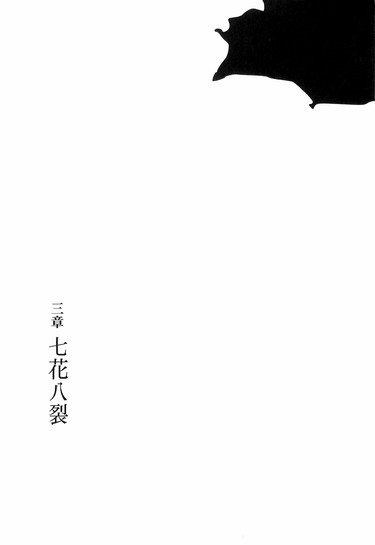
■ ■
それから一週間が過ぎた。
左右田右衛門左衛門は、あの第五道場での勝負のあと、すぐさま尾張に取って返したが──刀集めが名目の奇策士とがめと虚刀流七代目当主鑢七花はそういうわけにはいかず、鑢七実同様に客分扱いとして清涼院護剣寺に滞在し続けていた。
聖地を乗っ取るという七実の暴挙によって、現在護剣寺は門戸を閉じ、参拝客をすべて追い返している──何があったのかといぶかしむ客も少なくなかったが、しかし何の説明もせずに追い返している。
説明できるはずもないが。
もっとも、そうしていなかったところで、護剣寺には空き部屋は腐るほどあるのだ。二百名以上いた僧侶のうち、大半を──七実が間引いてしまっていたのだから。
残った僧侶にも戦える者はほとんどいない。
老いた僧侶か、あるいはまだ修行を始めたての小坊主ばかりである──逆に言えば、鑢七実に挑まなかった者だけが、生き残っているということだ。
これはこれで、やはり全滅に等しい。
聖地に相応しくない者が間引かれ。
相応しき天才が君臨する。
戦うことを人生の目的とする剣士の聖地としては、確かに今の有様のほうが正しく、鑢七実の手によって聖地はより聖地らしさを獲得したとも言えるが──幕府としては黙認できる状況ではないだろう。
刀集めの名目とは別に。
島流しに遭っていた虚刀流を世に引き戻した責任を取る意味でも、とがめは幕府の人間として──動かねばならないのだった。
「........................」
で。
実力の差というものを思い知らされた鑢七花は──この一週間、ずっと落ち込んでいた。一応、寝起きと食事こそするものの、ずっとうつろな目で、何をするでもなく、呆けた風に暮らしていた。
同じ境内にいながら、姉に会おうともしなかった。
とがめが何を話しかけようと、生返事だった。
今も──昼間から、敷きっぱなしの布団に仰向けになっているだけだ。
ただ、天井を見上げている。
「............」
去年のことである。
不承島において、七実と初めて立ち合ったとき。
父親、先代当主鑢六枝が死んで──直後のことだった。
──あのときも、こうしてたっけ。
七花はぼんやりと思う。
そうだ──あのときもこうして七花は落ち込んだ。あのときの手合わせでもまた、まるっきり勝負は成立せずに、完全にあしらわれてしまったのだ。
──否。
あのときより酷い。
一年前は、勝てるとは思っていなかった。
しかし──今回は勝てると思っていたのだ。
とがめと共に数々の死線を越えてきた自分ならば──鑢七実の視線をも、越えられると思っていた。
──あの眼。
鑢七実の──脅威の眼。
それをかわしきれると思っていた──ところか。
実際はどうだ──いいところなんてひとつもなかった。
──とがめの前で。
──それに、とがめの敵の前で。
あんな無様な姿を晒してしまうなんて──恥ずかしい。
──姉ちゃんにも、思い切り見下げ果てられて。
まったく──思い上がっていたのはどちらなのか。
先月、凍空こなゆきに負けた意味がまるでない──敗北から何も学んでいない。
決着は次回へ持ち越されたが──
どう考えても、あれは七花の負けだ。
敗北以外の何物でもない。
七実が、七花のあまりの弱さに気まぐれを起こしたに過ぎない。
どうして。
──どうしておれは、姉ちゃんに勝てるなんて思ってしまったんだろう──勝てるはずがないのに。
どうしておれは──姉ちゃんを助けてやれるつもりでいたんだ。
島で暮らしていた頃からそうだ。
姉ちゃんは。
最初っから、おれの助けなんて必要としていなかったのに──いつもおれが先走って。
おれに──何ができるって言うんだ──
「..................」
ばんっ、と。
そんな風に七花が、取り留めのないことを考えていると──いや、考えていないと──、まるでそこを狙いすましたかのように、廊下の側から、乱暴に障子が開けられた。
奇策士とがめだった。
ちなみに、当然のごとく同室である。
この一週間、とがめはと言えば、七花に対してらしくもない気遣いを見せていた──実の姉にあそこまであしらわれてしまった己の刀に対して、できうる限り、優しく接していた。
とがめにはとがめでやることがあったが──
時間を見つけては、部屋に戻ってきて七花を慰めていた。
およそ彼女には似つかわしくない言葉だったが、それは甲斐甲斐しいと言ってもいいくらいの行為だった。
そうされるほどに、七花は逆に、自分をみっともなく思うものだったが──優しさという名の残酷さを味わわされているようなものだったが──しかし。
今日、このとき。
このときに限っては──その心配はなかった。
障子を開け、その向こうに仁王立ちしているとがめの表情は──憤怒のそれだった。
彼女らしく。
彼女に似つかわしい──表情だった。
「......と、とがめさん？」
無言のまま。
とがめはずかずかと室内へと這入ってきて──そのまま足を止めることなく、寝転がる七花の枕元までやってきて、
「ちぇりおーっっっ！」
と。
思い切り、その顔面を蹴飛ばした。
七花は被虐趣味の男なので──はなく、己の主人に忠実なる男なので、とがめからの攻撃（暴力）を決して避けたことがないのだが、しかしこのたびの蹴撃だけはたとえ避けようとしたところで、避けられなかったかもしれない。
それほどに鋭い。
思いのこもった──一撃だった。
「ふんっ！」
そしてとがめは、その蹴り足をそのまま反転させ、七花の顔面にもう一度叩きつける。口元を封じるがごとき、かかとでの踏みつけである。あらゆる武装を拒否し、どんな武術をも身につけないことを矜持とする奇策士とは思えない、鮮やかな連撃だった。非力なとがめだから、また受けるのが七花だからいいようなものの、普通だったら歯が根こそぎになるような攻撃である。
「本っっ当に......っ、もう！」
いったい何が起きたのか、何をされているのか理解できない七花（「？？？？」）を、とがめは踏みつけにしたまま──怒鳴りつける。
「珍しく人が優しくしてやっておればつけあがりおって......いったいいつまで落ち込んでおるつもりだこのたわけが！」
「......え、え、えっ」
「一回や二回負けた程度でそこまで落ち込むばかがおるか！今日であれから何日経ったと思っておる──七花！わたしを見ろ！」
とがめは親指で自分を指さし──見得を切る。
「わたしがこれまで、いったいどれだけ負けてきたと思っておる──自慢ではないが一回や二回程度ではない、数百回、数千回と負けておるわ！それでも今のそなたのように、何もせずにただ落ち込んでおったことなどないぞ！そして最後には必ず勝ってきた！」
みっともないとは思わんのか！
とがめはそう──七花を踏みにじる。
みっともないとは思っている。
恥ずかしいと思っていた。
しかし──それは七実に負けたことに対してであって、こうして落ち込んでいることがみっともないとは──考えていなかった。
しかし、どうだ。
後悔している振りをして、反省している振りをして。
こんな恥ずかしい──おれがいるか。
「立てっ！」
七花の顔面からようやく足をどけて──とがめは大声を張り上げる。
その剣幕に気圧されて、七花は脊髄反射のように立ち上がった。
すると、とがめは立ち上がった七花の頬を思い切り張った。
身長が全然足りないので、背伸びをした上で跳躍しての不器用で不恰好な張り手ではあったが。
しかも着地に失敗した。
畳の上に尻もちをついたとがめだったが、すぐさま起き上がり、「一度だけだ！」と言う。
「一度だけだ！ 一度しか訊かん──そなたがどのような答を返そうと、それを各めるつもりはない──この度ばかりは無理強いするつもりはない、だから答えよ！」
そして、とがめは七花に問うた。
「そなた──七実と再戦する気はあるか？」
「..................」
ある──と言えば、嘘になるだろう。
先月の、凍空こなゆきのときとは違う。
こなゆきに負けたあと、七花は再戦を望んでいた──だが、こなゆきと七実とではまるっきり事情が違うと言わざるを得ない。
七実に対する負けは、他の負けとはまるっきりわけが違うのだ。
決着こそ持ち越されたものの──再戦の意味などないだろう。
どうせ負けるに決まっている。
今度こそは殺されるかもしれない。
決着が先に持ち越されたことについて希望を持てというのは、酷である以上に過酷な要求だ──しかし。
とがめは。
奇策士とがめはその過酷な要求に応え、まだ希望を捨てていない──ならば。
「ある」
七花はそう答えた。
はっきりと──そう答えた。
ついさっきまでなら、まったく反対の答を返しただろうが──たとえ嘘をついてでも、今はそれしか答がなかった。
嘘をつくことは──もう、覚えている。
とがめは、
「そうか」
とだけ言った。
余計なことは何も言わない。
それもまた──彼女らしく。
彼女に似つかわしかった。
「ならばわたしが奇策を授けてやる──そなたが天才の姉に勝てるだけの奇策をな。......まずはそなたの最終奥義、『七花八裂』の弱点から、話すことにしようか」
■ ■
一の奥義・『鏡花水月』。
二の奥義・『花鳥風月』。
三の奥義・『百花繚乱』。
四の奥義・『柳緑花紅』。
五の奥義・『飛花落葉』。
六の奥義・『錦上添花』。
七の奥義・『落花狼籍』。
その七つを同時に繰り出す虚刀流最終奥義、『七花八裂』──しかし考えてみれば、この奥義で倒した敵と言えば、最初の敵、真庭忍軍の真庭蝙蝠くらいのものである。
あとはせいぜい、京の道場において、とがめに見せるための練習くらいでしか使っていない。
使用頻度は意外と低いのだ。
「......ゆえに、弱点が見つけられたくらいのことで、さほど落ち込む必要はない──と、一応前置きをしておこう。相手が鑢七実でなくとも、いつかは露見していた弱点であろう」
とがめは言う。
敷きっぱなしだった布団は、畳んで押入れにしまった。今は互いに座布団を敷いて、七花ととがめは向かい合っている。
「弱点......ないと思ってたんだけどなあ」
「こう言ってはなんだがな......七花。そなたが半年前に考えたばかりの奥義であろう......穴がないほうがむしろ不思議だわ」
「まあ、そう言われりゃその通りなんだが」
七花は頭をかく。
再戦という目的を与えられて、頭の中はすっかり切り替わったようだった──この辺りは単純な性格の男の面目躍如である。
「で、その弱点てのは何だよ」
「普段なら七実が言っていたように自分で考えさせるところなのだが、今回は特別だ。単刀直入に教えてやろう──要するには四の奥義「柳緑花紅』が邪魔なのだよ」
「じゃ──邪魔？」
七花は、単刀直入と言うにしてもあまりにあけすけな言葉に、戸惑う。
「邪魔って、いったい──『柳緑花紅』のどこが邪魔なんだよ」
「ならば説明してみよ。虚刀流四の奥義『柳緑花紅』がいったいどんな奥義なのか」
二ヵ月前の薩摩。
大盆における校倉必との対戦において七花が使用した奥義──虚刀流における鎧通し。
虚刀流に七つある構えのうち、唯一こぶしを握る構え──四の構え『朝顔』から繰り出す、打撃透徹の奥義。
その一撃の前ではどのような防御も意味をなさず、外側はそのままに内側のみを破壊する──理論上は地球の裏側にいる人間にさえ攻撃を加えることが可能な技──
「──まあ、実際は校倉必の賊刀『鎧』の防御力にだけは通用しなかったんだけどな。けど、そうは言っても、ありゃあ虚刀流の技の中でもかなり有用な部類に入る技なんだぜ。確かに使いどころは難しいけどさ......。よりにもよってその技を邪魔だなんて──」
「有用無用の話をしておるのではない。七花。ならばその『柳緑花紅』──構えて、そして打ってみよ」
「............？」
それでも得心しかねるような顔をする七花だったが、そう言われてやらない理由はない。座布団から立ち上がって、まずは四の構え『朝顔』を取る。
足を両方とも横に向けて──その上で腰を落とし、大きな身体をちぢこめるようにして。
そしてその上で、思い切り腰を捻る。
背中をほとんどとがめに向けてしまうように。
そして片方のこぶしを握り、そのこぶしを反対側の手でくるむようにして──
「で、このまま──ねじった身体を元に戻して──こぶしを開放する──！」
虚刀流四の奥義──『柳緑花紅』。
身体はそのまま振り切れ、反対の方向へとねじれていくが──こぶしだけは打ち抜かずに打撃点に残す。
もっともこの場合は空振りなので、残ったこぶしに意味はないのだが──
「......で、これがどうしたよ。立派な奥義じゃねえか」
「そう噛みつくな。誰も『柳緑花紅』そのものを否定しようとは思っておらんわ。その奥義の凄さはよくよくわかっておる。ただな、七花──その奥義。他の六つの奥義と違って、今そなたがやってみせた通りに......『溜め』が必要になるであろう？」
「............？」
溜め。
身体を不自然なほどに捻って──そしてその不自然な状態で固定する。
そんな下準備が、必要となる。
「あ......」
「わかったか」
とがめは、ようやく理解が追いついたらしい七花に対し、座るように促してから、ゆっくりとした口調で言う。
「むろん、奥義発動までに一段階、前置きが必要になることは、それ単体で見れば弱点というほどのものではなかろう──事実、通じなかったとは言え、校倉必に対しては、そなたは何不自由なく『柳緑花紅』を発動させてはいたのだからな。しかし──他の技と組み合わせて放つとなれば話は別だ」
一の奥義から七の奥義まで。
同時に繰り出す──『七花八裂』
しかし、溜めが必要となる『柳緑花紅』が存在することで、それはわずかに、同時性を失ってしまう──
溜めとは、等号で隙に繋がる。
何のことはない。
鑢七実はあのとき──『七花八裂』のうち、四の奥義『柳緑花紅』が発動する隙をついて──凍空一族の怪力を使い、七花を道場の天井にまで、撥ね上げたのだ。
それだけのことだったのである。
「そっか......同時に、とは言っても......七つの技を使ってるんだ、腕と足の数が限られている以上、厳密な意味では同時ってわけにはいかないもんな。『七花八裂』は細かく言うなら、連撃とは言わないまでも、意味合いとしては混成接続に近い──」
「──だから七実は、あのときそなたに対し、混成接続を使ったのであろうな」
虚刀流──
『雛罌粟』から『沈丁花』まで、打撃技混成接続。
二百七十二回の打撃。
「なんだかんだ言って、やはりあの姉は弟に甘い。自分で考えろとか言っておいて、解答を示唆しておる」
自分で考えさせることもなく答をそのまま教えてしまったとがめに七実も言われたくはないだろうが──ともかく、そういうことだった。
四の奥義『柳緑花紅』は単体の奥義としてはともかく、混成接続技としては不適格なのだ。必要な溜めを隙として、突ける者には突くことができる──
「......どれくらいだ？」
「うん？」
「どれくらいの隙になるんだ、と訊いたんだ──『七花八裂』のその隙は、誰にでも突けるほどに大きなものなのか？」
「さて、な──一切武術の心得を持たぬわたしにわかるはずもないことだが、それでも推測でものを言うならば、さほど突きやすい隙でもなかろうよ。実際、真庭蝙蝠には通じたわけであろう。それに京の道場でも、有効に作用していた。まあ七実級──とは言わぬまでも、錆くらいの剣士ならば、きっと突ける隙なのであろうな」
「そうか......」
よくあのとき、巌流島で『七花八裂』を使わなかったもんだ、と七花は言った。ちなみに錆白兵との決着時に使ったのは三の奥義『躑躅』からの『百花繚乱』である。
「じゃあ──『七花八裂』は奥義として成立しないってことになるな。そんな明白な弱点があるんじゃ──」
七花は露骨にがっかりした風に言った。
自分で考えた奥義がこんなことになったのだ、それは無理からぬことだった。だいたい、『七花八裂』が使えないとなれば、ようやくのこと愛着の湧いてきた例の口癖、決め台詞も使うわけにはいかなくなる。
「『柳緑花紅』を抜いて、六つの奥義だけでやるにしたって──それだと調子が狂うんだよな。『六花七裂』になっちゃうし。語呂が悪いよ」
「そうでもないぞ、七花」
とがめはそんな七花に向けて、言った。
「弱点を補強する方法はある」
「え？ そうなのか？」
「わたしを誰だと思っておる──奇策士とがめだぞ。こういうことを偉そうに指摘するからには、既に対案は考えておるわ」
「あんたが偉そうなのはいつもだよ」
「ちぇりおっ！」
またも蹴りが飛んだ。
七花は避けない。
そして何事もなかったように会話は続く。
「『七花八裂』といって──そなた、七つの奥義を放つ順番については、意外と無頓着であろう？まあ同時に繰り出すというのが売りの奥義なのだからな、仕方がないが──話を聞く限り、今のそなたはただ、出し易い順番で奥義を出しておるに過ぎん」
「ん......まあ、順番にこだわりはないな」
たとえば、不承島において真庭蝙蝠と相対したときは──虚刀流二の構え『水仙』をとっていたから、二の奥義『花鳥風月』から始まって、三の奥義『百花繚乱』、四の奥義『柳緑花紅』、五の奥義『飛花落葉』、六の奥義『錦上添花』、七の奥義『落花狼籍』、そして一の奥義『鏡花水月』へと接続していった。
だがこれが決められた型というわけではない。
というか、最初から決まっていない。
七つの奥義の順列組み合わせ──五千四十通り！
どれであろうと『七花八裂』だ。
どういう順列組み合わせであろうと──七つ組み合わせられればそれでよかろうというのが、これまでの『七花八裂』だったのだから。
「いかにもそなたらしい、大雑把な考え方だが──その考え方を変えるのだよ。奥義を七つ同時に繰り出す『七花八裂』が素晴らしい技であることには変わりはないのだ──ならばその弱点を補強すればよいだけのこと」
「だから、どうすればいいんだよ」
「知れたこと。四の奥義『柳緑花紅』を最初に持ってくると、そう定めればよいのだ」
「............」
「技の途中に溜めができるから、それが隙となるのだ──最初に溜めがある分には、普通に『柳緑花紅』を放つ分と変わるまいよ」
「あ......そっか。そこから他の奥義を接続していけば──問題ないわけだ」
単純な解決法ではあるが──確かにその通りだった。
そうなると『七花八裂』は四の構え『朝顔』から打たざるを得なくなり、どの構えからでも発動できる奥義だという大きな利点は失われてしまうことになるが──その方策ならば、『七花八裂』から弱点は消え失せる。
五千四十通りから──七百二十通りに。
それだけのことで。
「なんだ──簡単なことじゃないか」
「そう、簡単なことなのだ」
しかし。
そう言うとがめの顔は──奥義の弱点を見抜いて、その対案まで提示しておきながら──あまり晴れやかとは言えなかった。
「それゆえに──この対案もまた、七実にははっきりと予想されておるだろうと思う」
「......そりゃ、そうか」
鑢七実の眼──である。
どんな技でも見るだけで習得し、更に弱点までも見通せる。
ならばその弱点の補強策まで見通していたとしても──不思議ではない。
否、そうでないほうが不思議だろう。
あの姉ならば。
「結局、姉ちゃんのあの『眼』を封じないことには、おれには勝ち目がないってことなんだよな──けど、それができりゃあ苦労はないぜ。目潰しだろうが煙玉だろうが、それこそ姉ちゃんは見切っちゃうだろうしな──」
「鑢七実の眼、か」
とがめはそこで鼻を鳴らす。
「一応──そのための策も練っているのだがな」
「え？ そうなのか？」
「そなたがみっともなく落ち込んでいる間にも、わたしは一生懸命働いていたのだよ。その隙間を縫ってそなたをやさし～く慰めながらな」
皮肉一杯の口調である。
しかし七花に皮肉は通じない。
むしろ逆に、自分がみっともなく落ち込んでいる間にも──とがめは七花が立ち直ることを信じて、そのために動いてくれていたのだと思うと、逆に嬉しくなってくるくらいだった。
先ほど、あれほど激昂したのも頷ける。
本当──いつまで落ち込んでいるつもりだったのだろう。
とがめはこんなにも、おれを信じてくれているのに。
「......ぶ、不気味ににやけるな......どうして嫌味を言われて喜んでいるのだ。どんな特殊な性癖だ......」
そんな七花の心中を知らないとがめは、座ったまま、膝を使ってじりじりと後ずさった。
刀の心、持ち主知らずである。
「でも──とがめ。姉ちゃんの眼に対する策なんてあるのか？」
「まあ、そもそも、護剣寺までの道中において、そなたから七実の眼のことを聞いた段階から、そのための奇策は考えてはおったからな。眼を封じればよいだけならいくらでも方法はあるが、しかし相手があの七実だからな──大抵の方法には、その対策が打たれておると考えるべきであろう」
「打たれておる──と言うけどな、とがめ。たとえ対策を打たれてなかったところで、こちらの動きを『見た』だけで、姉ちゃんはそれを見切ってしまうんだぜ。結局、どんな手を使うにしたって、姉ちゃんの眼の前にそれを示さないわけにはいかないんだから──」
「だから」
とがめは言った。
「見せなければよいのであろう」
「............」
「見えない奇策ならば相手が七実であれど通じるということだ。習得はおろか、弱点を見通すことさえできるはずがない。なにせ、見えないのだからな。......しかし、使えるのは一度きりだ」
そういう仕掛けだよ、ととがめは言う。
「失敗すれば同じ手は二度と使えぬし──また、他のどのような手も通じなくなるであろう」
「......準備は、もうできたんだよな？」
だから。
それでもまだ腑抜けていた七花を──とがめは蹴飛ばしたのだ。
我慢の限界だったのだろう。
しかしそれは裏返せば──準備万端ということでもあるはずだ。
「いや」
しかしとがめは、七花の言葉に首を振った。
「まだ最後の詰めが残っておる──その策を起動させるためには、七実との交渉が必要となる」
「あ、あんたと──姉ちゃんが交渉するのか」
思い出す。
半年前の、不承島におけるふたりの会話を──
相性最悪のふたりの『交渉』を。
「......つうか、思い出したくない......」
七花がいったい、どんな板ばさみの目に遭ったか。
まだ情緒が発達していない頃の七花だったから耐えられたようなものの、もし同じことが今この身に起きたらと思うとぞっとする。
「そうだな。そなたの心配ももっともだが──しかし、ここが正念場だ。何とか乗り切るさ──交渉はわたしの分野だからな」
そう言って、とがめは立ち上がる。
「あまり時間をかけてもいられない──尾張に帰った右衛門左衛門のこともある。わたしとしてはできる限り早く再戦を行ないたいのだが、そなた、いつなら動ける？」
「いつならって──」
七花は答える。
「──とがめが望むなら、そりゃ、今晩でも」
「いけるのか」
「幸い──というか、残念ながら、姉ちゃんとの勝負を経験しても、怪我ひとつしてねえからな──いつでもいけるよ。まあ、この一週間、寝てばっかいたせいでなまった身体をほぐすために準備体操はしなくちゃいけないから、今すぐってのは厳しいが」
「そうか──まあ今すぐというのが困るのはわたしも同じだ。ならば、とりあえず今晩としよう。それもまた七実次第だがな......細かい打ち合わせは、七実との交渉後ということにするが、七花。これだけは言っておく──七実に勝ちたければ、あの、胸の間に突き刺さった悪刀『鐚』を蒐集することが最低条件だぞ」
当たり前だが、ととがめは言う。
「ただでさえ手に負えない天才性を有するあの女に無限の体力を与え続けるあの悪刀は──いくらなんでも凶悪過ぎる。鬼に金棒もよいところだ。そのことを念頭に置いた上で、そなたはそなたで戦略を練るがよい」
「ああ......、おれとしちゃあ、姉ちゃんが健康になってくれりゃあ嬉しいんだけどな──しかしそんなことは言ってられないだろう。第一」
七花は──いったん言葉を止めてから言った。
それはこの一週間。
落ち込みながらも、どこかで常に思っていたことだった。
「あの悪刀──姉ちゃんにはそぐわない気がするんだよな」
「......？ どういう意味だ？ 病弱な天才である鑢七実に、あれ以上相応しい刀はないであろう──まさしく刀が持ち主を選んだとしか言いようがない。四季崎記紀の完成形変体刀、その本領が遺憾なく発揮されておるではないか。それとも、虚刀流ゆえにか？七実が虚刀流だから、刀を持つのが似合わんと言っておるのか？」
「いや──そういうことじゃなくて、もっと根本的に......姉ちゃんらしくないっていうのか。本当にあれで姉ちゃんの生命力は活性化してんのかなって......」
「......感覚的なものなら、わたしにはわからんよ。確かなのは、あの刀がある限り、そなたに勝機はないということだ。七実の『眼』と悪刀『鐚』──この二つの要素を取り除かんことにはな。......それでは、行ってくるぞ」
「え？」
言うだけ言って、障子を開けたとがめに、七花は驚いた。
「も、もう行くのか？ 姉ちゃんのところに？」
「今晩再戦を組もうと思えば、今から行くしかあるまい」
「ああ──まあ、そりゃそうか」
「七花」
廊下に踏み出したところで振り返って、とがめは七花に言った。
「あえて訊くまいと思っておったが──訊いてやったほうがそなたのためであろう。七実のほうがそなたより強いということを、どうしてわたしに隠しておった？」
「......それは」
いきなりのその質問に、七花は。
不貞腐れたように黙ったが──やがて。
「姉ちゃんが自分から強さを主張するような性格じゃないのはわかるだろ。あの人は自分が強いと思ってるんじゃない──周りが弱いと思ってるんだから」
「七実の理由ではない。そなたの理由を訊いておる」
「だから」
七花は横を向いて。
とがめから目を逸らして──言った。
「おれがとがめの刀になりたかったからだよ」
「............」
「姉ちゃんのほうが強いってわかったら──とがめは姉ちゃんを選んじゃうかもしれないじゃないか」
「......たわけが」
とがめは──そう呟いて。
それから、少しだけ、笑った。
「これも一度しか言わんから、よく聞いておけ。半年前ならいざ知らず──今はわたしは、わたしの刀はそなたしかおらんと思っておるわ。一度や二度負けたところで、それは変わらん」
こんなことをいちいち言わすな愚か者──
そう言って──とがめは障子を閉めた。
七花は、自分が今抱いた気持ちをどう表現していいものかわからず──とりあえずその場で、でんぐり返りをした。
そして大の字になって、考える。
今晩の再戦のための──戦略を。
とがめの交渉が成功することを信じて。
■ ■
廊下を歩き。
豪華絢爛な衣装を引きずるようにしながら、一直線に七実の部屋を目指すとがめの足取りに迷いはない。
こうと策を決めたとがめに、迷いなどあるはずがないのだ。
七花は十分に焚きつけた。
あとは──決着あるのみだ。
「............」
しかし──そんなとがめにも、まだわからないことはあった。
「鑢七実......いったい何を考えている......？」
それは──
彼女が忌み嫌う否定姫が、同じ頃に尾張で抱いた疑問と、まったく同じ疑問だった。
「弱点を指摘しに来たのならば、ただそうすればいい──それなのに、どうしてこんな回りくどいことをする......こともあろうに悪刀『鐚』まで手に入れて、散々甘やかしてきた弟に、なぜ勝てるはずのない勝負を強要するのだ......？まさか本当に、剣士と剣士とが向かい合えば戦う理由など必要ないと考えているわけではあるまい──」
四章 鑢七実
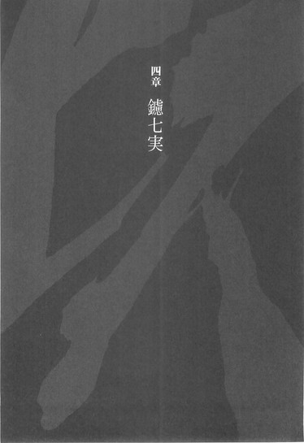
■ ■
鑢七実が悪刀『鐚』を手にしてしまったことは、奇策士とがめにとっては厄介ごと以外の何物でもない、それは確かなことだったが──しかし、だからと言って、もしもそうでなかったとして、かの刀が死霊山の頂上にあり続けたとしても──その蒐集は、決して簡単にはいかなかっただろう。
壱級災害指定地域、死霊山。
そこに保管されていた刀をわずか半刻足らずで蒐集できたのは、あくまでも天才・鑢七実だったからである。
過酷な環境である死霊山において悪刀『鐚』を守護していた白装束の集団、死霊山神衛隊は──もしも敵に回していれば、とがめにとっても七花にとっても、厄介な相手になっていたはずである。
とは言え彼らは戦闘集団ではない。
凍空一族のような狩猟集団でもない。
ただ──彼らには見えるのだ。
死霊。
幽霊、亡霊、心霊。
霊魂──人魂。
何と言うのが正しいのかわからないが、死んだのちの人のありかたが──彼ら死霊山神衛隊には見えていたのだという。
交霊術──だそうだ。
眉唾な話ではある──しかし、先月踊山にて奇策士とがめと鑢七花が遭遇した真庭忍軍十二頭領がひとり、真庭狂犬──数百年もの間、数千人もの身体を乗っ取り続けながら生き続けたあのしのびを例に取り上げれば、そういうものの存在を一概に否定はできないだろう。
要するに残留思念──である。
死後の世界はなくとも──人の思いはあるだろう。
記憶もあれば。
それに付随する思いもある。
思い出も──あるだろう。
同じく真庭忍軍十二頭領の真庭川獺、『読み調べの川獺』の忍法記録辿りを例に取り上げれば、迷信めいたものではなく、ある程度理論的にも裏づけられるかもしれない。付言しておけば、真庭川獺は真庭の里の生え抜きでこそあるものの、父方の血に陸奥のものが入っていた──そうである。
あるいは否定姫ならこう言うに違いない。
「幽霊はいない。しかし──幽霊を見ることはできるでしょうね」
ともあれ。
そんな死霊山神衛隊をないがしろにした鑢七実である──当然のこと、その技術をも、彼女は見取っている。
その眼で。
真庭忍法を見取ったように。
凍空一族の怪力を見取ったように。
彼らの交霊術を──見た。
如何せん戦闘技術ではないゆえに、見取りはしたものの、使いどころに困る技ではあったが──とりあえず七実は、陸奥から四国へと向かう船の上で──
ものは試しと、なんとなく、使ってみた。
現れたのは──父親、鑢六枝と。
母親──鍍みぎりだった。
ぼんやりと──ではなく、はっきりと見えた。
「......ふうん」
七実は納得したようにそう頷く。
「なるほど......こういうことか」
していると、彼らの声も聞こえてきた。
まずは父親、六枝の声である。
──七実。
──おまえは──
──おまえは──あまりにも──
──あまりにも──例外的過ぎて──
──おれには──
──おまえを育てることは──
──できない──育てることはできない──
──おまえは──
──おまえは──化物だ──
──おまえは生まれてくるべきではなかった。
母親、みぎりの声がそれに重なる。
──かわいそう──
──かわいそうな──こ──
──かわいそうなこ──
──あなたは──本当に──可哀想──
──あなたは──
──楽に死ぬことさえできないなんて──
──あなたは死ぬこともできず──生きることもできず──
──この──生きぞこない──
──あなたは──
──あなたなんて──
──あなたなんて死ねばいいのに。
「......くだらない」
そこで七実は──その技の使用を止めた。
くだらない技術だ。
こんなものは──ただの記憶じゃないか。
わたしの中にあるものだ。
ならば──わざわざ技として使うまでもない。
こんなことは。
いつでも、わたしは思い出している──
「消えろ」
ぼそっと、そう呟いた。
すると──現れたふたりの姿が消えていく。
夢幻のごとくに──消えていく。
「あなた達に言われるまでもないのよ──そんなこと」
そうして。
鑢七実は、その後は死霊山神衛隊が使っていたその技術を使うことなく──船の旅路を過ごしたのだった。
家族で唯一──彼女を認めてくれる。
ありのままの鑢七実を姉と認める、弟に会うために。
■ ■
「いいでしょう。いえ、それとも悪いのかしら──どちらにしても、相わかりました」
あっさりと、そう頷かれて──
奇策士とがめは、思惑通りだというのにもかかわらず、少なからず戸惑うこととなった。不覚にもそれが表情に出てしまったのだろう、
「意外そうですね」
と、七実から言われることになる。
「むしろ意外なのはこちらのほうですよ、とがめさん──あれからもう一週間ですからね。てっきりとがめさんと七花は、諦めて帰ってしまったのかと思っていました」
「......言うではないか」
かちん、と来るものの、しかし強く反論はできない。
尻尾を巻いて逃げ帰りこそしなかったものの──一週間、七花が何もできないほどに落ち込んでしまったのは事実なのだから。
しかし、とは言え。
帰ると言っても、七花の場合どこに帰ればいいのか。
不承島なのか。
今は誰もいない──あの無人島なのだろうか。
「..................」
七実の部屋──である。
清涼院護剣寺、本来ならば女人禁制となる地区の一室を、七実は寺院側からあてがわれていた。特別扱いもいいところだったが、しかし彼女が今この聖地でなしている傍若無人な行為を考えれば、むべなるかなである。歴史ある護剣寺の僧侶たちを自分の世話係のように使っているのだから、七実もかなりの怖いもの知らずである──実際、彼女に怖いものなどないのだろうが。
腑抜けた七花に強烈な蹴りをくれてから、とがめはそのまま、一直線にこの部屋へとやってきたのだった──七実がどの部屋で過ごしているのかは知っていたが、七花同様、これまでそこを訪ねはしなかった。
準備に──手間取っていたからだ。
少なくとも奇策としての体をなすまでは、七実にその動きを気取られるわけにはいかなかったから。
見られるわけには──いかなかったのだ。
そして今日、ようやく準備は整った──七花も持ち直した。
だから、あとは交渉だった。
再戦の申し込み──しかし、これがあっさりと成就してしまったのである。
とがめの文言を聞くなり、
「相わかりました」
と、すぐに七実は答えたのである。
はいはいとこそ言わなかったものの、ふたつ返事である。
「まあ──受けてくれるなら、こちらとしてもそれに越したことはないのだが......な」
「断る理由がありませんよ」
七実は言う。
「わたしは──刀ですから」
「......七花は、刀が刀を所有するなど、意味がわからないと言っておったがな──」
とがめはぼやくように言う。
「──勝負に勝つ以外に、その......そなたの胸の間に挟まった、悪刀『鐚』を引き渡してくれる条件はないのか？......七花やそなたがどう思っておるのか知らんが、わたしはできれば姉弟対決など見たくはない」
「......お優しいんですね──相変わらず」
七実は薄く笑った。
「わたしは、確かにそんなあなただからこそ──七花をお任せしたわけですから、恨み言を言うのは筋違いなのですけれど──けれど、とがめさん。まさかあなたが──七花をああも人間扱いしてくれているとは、思いませんでしたよ」
「............」
七実の言葉に、とがめは応えない。
構わずに、七実は続けた。
「随分と──ぬるくなったわ、あのこ。島にいたときは、もうちょっと、こう......鋭い刀だったのに。今はなんだか──錆びた刀みたい」
「錆か」
とがめは苦笑する。
「島で言ったかな、薄刀『針』の持ち主は錆白兵という名前だったのだがな──奴こそ、自分のことをそう語っておったよ。──拙者は錆にまみれた折れた刀でござる、と」
「折れた刀──ですか。けれど、むしろそのほうがよいのかもしれませんね。......いえ、悪いのかも、しれませんね」
七実は言う。
「いっそ、七花も──わたしが折ってあげるべきなのかしら」
「物騒なことを言うでない」
「物騒？ 何を言うのですか──わたしと七花は、今宵、物騒なことをするのでしょう。物騒至極極まりない──殺し合いを」
「......真剣勝負は避けられぬか」
「避ける理由がないのですよ」
「そうか。ならばもう言うまい」
とがめはそう言って、言葉を切った。
いずれ、剣士同士の言い分だ。
口を挟める領分ではないのだろう──そこから先は。
「そうそう、とがめさん」
と。
そこで今度は、七実のほうから話を振ってきた。
「七花はまだ──口を滑らせてませんか？」
「............」
その質問の意図するところはすぐに知れる。
そして残念ながら、返す答は否だった。
「残念ながら──両方、既に聞いておる」
「あら」
七実は口元を押さえる。
苦笑したらしい。
「まあ──予想はしていたけれど」
「そなたも──わたしの事情については、聞いておるのだったな」
「ええ。まあ──わたしが制圧しているとは言え、幕府管轄下のこの護剣寺で話すようなことではありませんね」
とがめの事情。
若くして幕府の中枢付近にまでのぼりつめた正体不明の奇策士の──その出自。
先の大乱。
その首謀者──奥州の顔役、飛騨鷹比等。
それが──とがめの父親である。
家鳴幕府にとっての大逆人──
そしてその飛騨鷹比等を討つことによって大乱を収めた、いわゆる大乱の英雄こそが──鑢七実と鑢七花の父親、鑢六枝なのだ。
つまり──奇策士とがめにとって、現在自分が仕えている家鳴幕府は皆殺しにされた家族の仇であり、また七実と七花は──父を殺した張本人の、子供なのである。
奇妙な因縁だった。
しかし、その因縁を知りながら、とがめは不承島を訪ねたのだから──これは歴史的必然と言えるのかもしれないが。
「互いに──父親のことでは苦労しますね」
「まあ──そうだな」
大乱の英雄は、しかしその後、島流しの憂き目に遭っている。
七実と七花はその巻き添えを食った。
「そう言えば、とがめさんは──父が島流しにされた理由については、知っているのですか？」
「ああ。当時六枝どのが仕えていた戦国六大名が一家、徹尾家の上役の機嫌を損ねたと聞いておるが──」
「まあ、その通りです──けれどね、とがめさん。それ──本当は父のせいじゃないのですよ」
「なに？」
「母のせいなんです」
七実は言う。
「それこそ母は徹尾家ゆかりの女でしたから──まあ、それを今更どうこう言うつもりはないのですけれど。前にも言ったように、幕府を恨むつもりは毛頭ありません」
「......どういう意味だ？」
「徹尾家としても表沙汰にできることではありませんから、書類上はどうなっているのかわかりませんけれど、父は、母を殺した疑いをかけられたのです。......考えてみれば、島流しで済んでよかったくらいの疑いですよね。本来なら打ち首にされていてもおかしくない──よくても切腹でしょう。まあ、腐っても大乱の英雄ということで、温情をかけられたということでしょうか」
「殺したのか」
思わず、訊いてしまうとがめ。
訊いていいことなのかどうかもわからないままに。
「鑢六枝は──己が妻を」
「さあ。真相は今となっては闇の中ですよ。いえ──藪の中かしら。最後にかかった医者も藪だったみたいですし。うふふ」
「その冗談は笑えんな......」
「どちらでもいいのですよ。いえ──どちらでも、悪いのかしらね」
七実と七花の母親──鑢みぎりが死んでいること自体は、とがめは知っていた。
七花と何度か話題に上せたこともあったくらいだ。
しかし──その話題の中では、母親は病死したことになっていたはずだ。
七花は、顔も覚えていないと言っていた──
「わたしは覚えていますね。まあ、その頃はまだこの『眼』は獲得していなかったのですが──それでも、記憶力には自信があるのです」
「であろうな」
「母はね。困った人でしたよ。病弱なわたしよりも早死にしたことは、罰が当たったとしか思えませんね──百歳まで生きそうな人だったんですけれど。まあ、七花は父から、母親のことを意識させない育て方をされましたからね、あまり深く考えたことはないでしょう......実際、あのこ、母性や女性に、酷く疎いでしょう？」
「ああ......それは常々思っておる」
「常々、自分には女性としての魅力が足りないのではないかと思っていたのですね」
「思っとらんわ！」
怒鳴りつけた。
思っていたからだ。
そんなとがめを、七実はくすくすと笑う。
護剣寺においては初めて見せる、例の邪悪そうな笑みだった。
本当に──悪そうである。
七花はああ言っていたが、実際、こういうところから見ても七実は、悪刀『鐚』の所有者には相応しいのかもしれない。
「まあ、母のことはともかく──両方、と言いましたね、とがめさん。ということは、父が死んだときのことも──聞いたということですよね」
「ん。ああ──」
それは。
とがめの父親、幕府にとって禁忌的存在である飛騨鷹比等のこととは違い、口に出して憚られるようなことではないが──しかしそれでも、寺院というこの場所で、大っぴらに言っていいことなのかどうかはわからなかったが──
「──七花が、六枝どのを殺しているということだな」
と、とがめは言った。
「ええ」
と七実は頷く。
「それを聞いて、どう思いました？」
「どうもこうも......まあ、わたしはそれについて、何を言える立場にもないさ」
大乱の英雄。
自分の父親を討った──とがめの目の前で、飛騨鷹比等の首を刎ねた鑢六枝が死んだと初めて聞いたときに、何も感じなかったと言えば嘘になる。
しかし、七花が殺したのだと聞いたときは──
まず驚きが先に立った。
そしてそれ以上は──考えなかった。
自分が考えてはいけない領分だと判断して。
「──武術の流派の中の考え方に口を出しては、奇策士失格なのでな」
「流派の中の考え方？」
七実はその言葉に首を傾げ──それから、
「ああ」
と言う。
「ひょっとしてとがめさん、勘違いされていますか？よく聞く一子相伝の定めとか、奥義を引き継ぐ際に師匠を殺さなければならないとか──そんな事情で、七花が父を殺したのだと思っているのですか？」
「──違うのか？」
てっきり、そうだと思っていた。
思い込んでいた。
しかし──考えてみれば、七花はそんなこと、一言も言っていない。
勝手にとがめがそう思っていただけだ。
「ならば──七花との稽古中の事故か何かで、六枝どのは命を落とされたのか？」
「違いますよ」
それもね、と七実は言う。
「そこまで言ったのなら、訊けば教えてくれたでしょうに──まあいいです。せっかくですから、わたしが教えてあげますよ。七花はね──わたしのために、父さんを殺したのですよ」
「......え？」
七実の言葉にとがめは呆然となる。
七実のために？
「まあ、不覚としか言いようがないんですけれどね──わたしの見稽古に、父が気付いてしまいまして。十九年間、父にはずっと秘密にしていたんですけれど......」
「ああ......そなたを才能以上に強くせんために、六枝どのはそなたに何も教えなかった──んだったっけな」
そして──そのために獲得した見稽古、と聞いた。
七花は知っていた──そうだ。
けれど六枝は知らなかったのか。
と、いうことは。
「ご推察の通りです。七花が口を滑らしました」
「............」
本当に口が軽いな、ととがめは失笑する。
しかし、その失笑は──すぐに打ち消された。
七実の次の言葉に。
「で、父さんはわたしを殺そうとして」
淡々と言う。
「寝ているわたしを、殺そうとして」
他人事のように、淡々と言う。
「わたしは殺されてあげてもよかったんだけれど」
それが他人の思い出でもあるかのように。
「それに七花が気付いて」
淡々と言う。
「七花が父さんを殺しました」
武術の流派云々では──なかった。
どころか。
ただの──それは殺し合いだ。
とがめは、さすがに言葉を失った。
「し、しかし──」
それでも、気力を振り絞って、とがめは問う。
「七花は、あれほど六枝どのを尊敬し──」
「あのこは刀ですよ」
七実は言う。
「そして父も刀──わたしも刀。通り一遍の考え方は通用しません。ましてわたし達は無人島という箱庭育ち──まあ実際、わたしを殺そうとしたこと以外は、七花にとって父は、最高の父親であり、師匠でしたからね──」
母のことはよく憶えていないらしいですし。
七実はそう付け加えた。
「父が母を殺した──かもしれないことも知らないわけですし。それでもあのこは納得ずくで島流しに遭ったのです。......まあ、心優しいこってことになるのでしょうか？」
「............」
「ところで、わたしが何故、先ほどからこんな話をしているか──とがめさん、わかってますか？」
「鑢家にとって」
とがめは、七実からの質問に答えた。
「鑢家にとっては家族同士の殺し合いなど──日常茶飯事だとでも、言いたいのか？」
「その通り」
七実は微笑んだ。
実に悪そうに。
父が母を殺したかもしれない。
姉は父に殺されていたかもしれない。
弟は父を殺した。
それが鑢家。
だから。
姉が弟を殺しても。
弟が姉を殺しても。
それは、なんら不自然ではない──！
「ですから──姉弟対決が見たくないというのでしたら、どうぞ尾張へお帰りください。わたしか七花か──勝ったほうが、そのまま尾張を訪れましょう」
「......そなたが勝った場合、そなたがわたしの刀集めに協力してくれようとでも言う気か？」
「ええ」
意外にも、ここで頷く七実。
どこまで本気なのかわからない言葉を──まるで揺さぶりのごとく、続ける。
「あなたの刀集めを完遂させないことには──父の汚名を雪ぐことができないのでしょう？父の名誉回復が──わたしがあなたに七花を貸し出す条件だったはずですよね」
「......確かに、そうだが」
その話も。
今の話を聞いた後だと──意味合いが変わってくる。
殺されそうになりながらも。
どころか、ろくに育てられもしなかったのに──
それでも、島流しにされた父の名誉回復を望むのか。
戦国六大名徹尾家家臣、鑢家──いったい。
どんな一族なのだ──と、思わされる。
「ならば──七花が中途で倒れるようなことになれば、わたしが代わりになるしかないでしょう。弟の不始末は姉の不始末──」
「......不始末の原因がよく言うわ」
さすがにここに至っては軽口の類だろう。
とがめはそう判断し、
「本土の空気はそなたには濃過ぎるのではなかったのか？」
と皮肉を返した。
「たまたま生命を活性化する悪刀『鐚』があったからよかったようなものの、島を出て生きていけないとまで言っていたはずのそなたが、よくもまあ蝦夷だの陸奥だのまで出向いたものよ。踊山では七花でも凍傷になりかけたのだぞ」
「最愛の弟のためですからね」
しかし七実はびくともしない。
「まあ、そうは言っても悪刀『鐚』の存在には確かに助けられていますけれど......、ね」
「......ちなみに、どうやって海を渡ったのだ？あの島に船はなかったはずだが。ああ、真庭忍軍に襲われたと言っておったな──となると、真庭忍軍が乗ってきた船にでも乗ったか」
「いえ、海の上を歩きました」
忍法足軽です、と七実は言った。
とがめはうんざりしたように「そうか」とだけ言った。
本当に──真庭忍軍は、余計なことばかりしてくれる......。
真庭虫組が不承島を訪れたのは鳳凰と同盟を結ぶ以前のことだから、文句を言うのも筋違いだが──それでもだ。
「いずれにしても、わたしは七花以外の刀を使う気はない。そなたとのふたり旅など、まっぴら御免だわ」
「異なことを。刀など──所詮は消耗品ですよ」
七実は言った。
「折れれば代わりを用意するのが当然でしょう」
「............」
「許される限りでひとつ、訊いておきましょうか」
そして──七実は、とがめを見る。
その眼で──見る。
じっと。
ぎょろりと。
まじまじと。
「刀集めの旅が終わったあと──あなたは七花をどうするつもりなのです？」
こんな場所でするような話ではない。
だから七実は、あえてみなまで言わないが──しかし、それはとがめにしてみれば言わずもがなのことだった。
虚刀流はとがめにとって父の仇である。
その仇の当主である七花を──いったい、どうするつもりなのか。
「わたしのことはともかく────七花のことは、ちゃんとしてあげて欲しいものですけれどね。刀は消耗品ですけれど──七花を人間として扱う気があるというのなら」
「......わたしの勝手だ」
とがめは、無理矢理に話を打ち切るように──腰を浮かす。
「そなたに言われるまでもない──わたしにはわたしのやりかたがあるのだ。わたしは七花に──覚悟を決めて欲しいだけなのだ」
「覚悟、ですか。わたしにもぴんと来ない言葉ですね、それは」
「であろうな」
「まあ一応、聞いておきましょう。覚悟──ね。では、とがめさん、お手並み拝見といきましょうか。今宵のことも含めて──」
その眼で、とがめをどう見たのかはわからない。
彼女の言葉を──どう見切ったのか、わからない。
しかし七実は──頷いた。
「──一週間前は何の仕掛けも打たなかったようですけれど......、今晩は、あなたも手を出すのでしょう？いえ、手ではなくて──出すのはあくまで知恵、ですか」
「さて......、どうかな」
「無駄ですよ」
立ち上がったとがめに、七実は言う。
挑発的に──屈辱的に。
七実は七花とは違う。
心理戦でさえ──天才性を発揮する。
「あなたがどのような策を練ろうとも──わたしの眼には通用しません。この眼で見た瞬間──その策さえも、わたしの眼は取り込める。そこにわたしの意志は関係ありません──見取ろうと思う必要さえもないのです。見れば好むと好まざるとにかかわらず、すべて見取れる。それがわたしの見稽古です」
「ふん。まるで見取りたくない技術でも、見取ってしまったかのような物言いだな」
死霊山神衛隊。
死んだ者の存在を気取る──技術。
父親と。
母親に。
「............」
もちろん、そんな事情はとがめの知ることではない──ただ単に、七実の言葉尻をとらえただけのことである。だからこそ、逆にそれが如実に、とがめと七実の相性の悪さを示しているとも言えた。
とがめは続ける。
「策は策でも、わたしが練るのは奇策だぞ。そなたのおめめがいくらよかろうとも──必ずわたしは、その眼をかわしてみせようぞ」
「いいでしょう。......いえ、悪いのかしらね。まあどちらでもいいわ──どちらでも悪いわ。では......楽しみにしておりますよ」
七実はもう、言葉を返さなかった。
実際──楽しみにしているのだろう。
とがめの言う『奇策』を目にすることを。
「夕食後、第五道場に向かえばよいのですね？」
「ん。ああ......いや。道場ではない」
とがめは、そこで思い出したかのように言う。
殊更、ことのついでのような口調で。
「違うのですか？」
「そなた達の決戦は、道場ではなく戦場でこそ行われるべきであろう。一週間前のような曖昧な終わり方はこちらとしてももう御免なのでな。またも決着を次回に持ち越すようなことがあってはならぬ。きっちりと決着をつけるためにも──そなた達には御仏の前で戦ってもらうことにする」
「......御仏？」
「言うまでもない」
とがめは不敵に笑いながら、決戦場所を告げた。
「旧将軍が出したかつてない悪法......刀狩令によって建立された、十万本の刀の集大成──刀大仏の前で、ということだ」
五章 七花八裂（改）
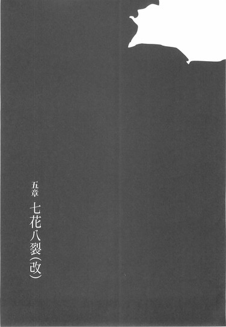
■ ■
刀大仏。
考えてみれば、七花は一週間前にこの聖地、清涼院護剣寺を訪れてから、この決戦のときに至るまでの一週間、旅の道中あれだけ興味を持っていたこの刀大仏をその眼で見ていなかった。
到着直後になし崩し的に七実と戦うことになってしまったし、戦ったあとのことは言うに及ばずである。
そうして見上げる刀大仏は──とにかく巨大だった。
一般に一丈六尺以上の大きさの仏像のことを大仏と言うが、この刀大仏は十丈を軽く越える大きさだった。見上げても見上げきれないほどの大きさである。とにかく大き過ぎて──その全容を把握するのにも骨が折れる。
十万本の刀で作られたというだけあって、四本ある腕のそれぞれに、刀剣が握られている。そしてとても仏とは思えないような憤怒の表情を浮かべた、それは戦士を象った像だった。
その巨大な仏像を囲う形で立てられた護剣寺の本堂もまただだっ広く、あちこちに太い柱が突き出している。
時間も時間である。
鞘走山という険しい山中のこと、外はすっかり暗くなっていたが──建物の中だけは昼間よりも明るかった。
刀大仏を照らすために本堂の内には数多くの燭台が備え付けられていて、数百を越える蝋燭が本堂内に橙色の明かりをもたらしているのだ。
巨大な刀大仏を。
ゆらゆらと揺れる橙色の光が──四方八方から、照らし上げている。
そんな明かりの中──七花は刀大仏を見上げていた。
──刀狩令。
旧将軍の発令した、悪名高き法律。
日本中という日本中から刀を集め──集まりに集まった十万本。
十万本の──武士の魂である。
七花は一本の日本刀として育てられた──今ももちろん、そのつもりである。
だからこの刀大仏を見て──感じるところはあった。
それは四季崎記紀の完成形変体刀を見たときに感じる、例の共感覚とはまったく違うものだったが──確かに感じる。
圧倒されるほど圧巻なその圧力に。
「感動を台無しにするようでなんだけれど」
と。
正面に立つ七実が、七花に言った。
「この刀大仏......結構、刀以外の混ぜ物もしてあるらしいわよ。混ぜ物と言っても金とか銀とか、高価な金属ではあるんだけれどね、とにかく純粋に刀だけで作られたものじゃないんだって。まあ、この大きさにしようと思ったら十万本じゃ足りないわよね──」
「......姉ちゃんは、いつも夢がない」
七花は言われて──視線を戻す。
「なんでそういう、がっかりすること言うかな」
「今更そんなことを言われても」
七実はため息をつく。
今回はことのほか、よく似合った。
「わたしが夢を見られない身体であることは、七花が一番よく知ってくれているはずでしょう。夢を見られない──夢を見る必要もない、わたしの身体」
「今は──そうじゃないだろう」
「そうね」
七実は例によって法衣である。
いちいちはだけたりはしないが──その内側、胸の狭間に、あのくない──悪刀『鐚』は、刺さり続けているはずだ。
七花が見ないとわからないくらいの変化ではあるが、顔色さえもいいような気がする。青白いは青白いままだが──ともすればこのまま、七実の身体は全快するのではないかと、七花は思った。
健康。
それは七実が──むろん七花も──望んでやまなかったものだ。
夢と言うなら、それこそ夢だったろう。
しかし、それでも──不自然だと思う。
どうしてだろう。
どうしてなのかはわからないが、とにかく、不自然だと思う。
不似合いだと思う。
七実が、悪刀『鐚』を携えている姿は──
「まあ──悪刀七実、とでも言ったところかしらね」
七実は言う。
「別に、そうして眺めていたいなら、いつまでもそうしてくれていてもいいんだけどね──七花。でも、観光気分でわたしの前に立とうだなんて、随分といい度胸じゃないの」
「そんなつもりはないよ。けど、姉ちゃん──もう一回だけ、言わせてくれないか？」
「しつこいわね」
七実は七花に、言わせない。
「何度言われても答は同じよ。この悪刀『鐚』は──あなたがわたしに勝たない限り、渡さない。渡してあげない。あなたが自分の所有者のためにこの刀を蒐集したいというのなら──あたしを倒すしかないのよ」
「............」
「殺す気で来なさい」
七実は言って──構えない。
構えないという構え。
虚刀流零の構え──『無花果』。
「わたしもあなたを──殺してあげるわ」
「......姉ちゃん」
「お願いだからあまりがっかりさせないで頂戴。こうして再戦を挑んできたことは評価しているのよ──だから、構えなさいな」
そう言われて、言われるがままに。
七花は──構えた。
足を平行に前後へと配置し、膝を落とし、腰を曲げ、上半身を軽く前傾させる──両手は貫手の形で、肘を直角の角度に、これも平行に前後へと配置する。体重は前方にかけられているようで、若干、前のめりの体勢である。
虚刀流七の構え──『杜若』。
鑢七実、鑢七花。
双方、一週間前と同じ構えだった。
「ふむ」
七実は──そんな七花を見る。
己が眼で、見る。
じっと。
ぎょろりと。
まじまじと──
「少しは、研がれてきたようね──錆も、いくらか落ちているわ。けれど......まだぬるいかしら。熱くもなければ冷えてもないわね。ところで七花、『七花八裂』の弱点は、ちゃんと補強できたのかしら？」
「もちろん──だ」
自分で考えちゃいないけどな、と七花は言う。
「ばっちり、修正してきたぜ」
「そう。まあ、それくらいはしてくれないと──再戦する意味はないわね」
「これから繰り出すのは、姉ちゃんが初めて見ることになる『七花八裂』だ──一週間前みたいにはかわせないぜ」
「そうかもね」
構え、臨戦態勢に入った七花の表情は厳しい。
しかし──七実の表情はゆるかった。
構えない『無花果』は、表情さえも構えない。
日常のままである。
自然体のままである。
そして自然体のまま、彼女は、
「とがめさん」
と──、あの日と同じように壁際にいる奇策士に声をかけた。
戦うふたりの他に、この本堂内にいるのは、とがめひとりだけである。右衛門左衛門はもちろんのこと、護剣寺の僧侶達もいない。立会人兼審判役としてのとがめでさえ、ふたりの戦いに巻き込まれないよう──それだけ離れているのである。
腕を束ねて、壁にもたれていたとがめは、
「なんだ」
と、応える。
「そろそろ、合図をお願いします──勿体ぶっていても仕方ないでしょう」
「......ひょっとしたら、これが最後の会話になるかもしれないのだぞ。もう少し、話し続けていたらどうだ」
「この期に及んで、まだそんなことを」
七実は笑う──邪悪そうに。
悪刀『鐚』の所有者に相応しく。
「心配されずとも、最後の会話にします。前回のような不細工な決着には致しませんよ──ねえ七花？あなた、父さんを殺したときのこと、憶えてるかしら？」
「......そりゃ、憶えてるけど」
七花は答える。
構えたまま。
「それがどうした？ 姉ちゃん」
「いえ別に。あのときのお礼を、まだ言っていなかったと思ってね──でも、別に感謝はしていないのよ。だから今も、言うつもりはない。わたしはあのとき──父さんに殺されても、よかったんだから」
「............」
「殺されてもよかった。生きていても、しょうがないんだから」
「姉ちゃん──それは」
「だから」
七実は言った。
「ちゃんと、わたしを殺してね」
そして──再度、とがめを見る七実。
七花の返事を待たずに。
「そういうことですから、早く合図をお廉いします。......それとも、時間を稼いででもいるのですか？あなたの奇策には時間がかかる、とか──」
「......わかったわかった」
とがめは鬱陶しそうに舌打ちをして。
目を閉じ、半ばやけくそのように片手を上げた。
「好きなだけ殺し合え。この刀姉弟が。もう止めんよ、好きにしろ──」
そして、振り上げた手を──勢いよく振り下ろす。
「いざ尋常に──始めっ！」
そしてその瞬間。
奇策士とがめの奇策が──発動した。
■ ■
もちろん、鑢七実は奇策士とがめがどのような仕掛けを打ってこようとも、即応できるつもりでいた。打ち明けた話をしてしまえば、このときの七実は対戦相手である弟の鑢七花よりも、審判役を務めるとがめのほうにこそ注意を払っていたと言っていい。
もっとも警戒していたのは飛び道具である。
本堂の外から、あるいは本堂を支える太柱や巨大な刀大仏の裏側あたりから、鉄砲を使って自分を狙い撃ちにするつもりなのでは──と。
しかし、正直言って七実は鉄砲は怖くない。
不承島における真庭忍軍十二頭領がひとり、真庭蜜蜂との戦闘を思い起こせばそれは明白なことである──百発百中の命中精度を誇る、二十丈先からでも対象を正確に狙い打てるかの忍術、忍法撤菱指弾を、七実はあっさりと見切り、それを逆手にまで取ったのだ。
だから、警戒こそしていたものの──だからこそ逆に、恐らくそれはないだろうとも踏んでいた。
それは奇策と言うには、あまりに普通過ぎる。
そんな普通のことは──仕掛けてこないだろう。
では、とがめがどんな奇策を打ってくるのか。
七実には皆目見当がつかなかったと言っていい。
否──そうではない。
七実には、見当をつける必要がないのだ。
なぜなら──見ればわかるから。
皆目もへったくれもない──七実の眼。
見稽古。
見る。
見切り。
見抜き。
見定め。
見通し。
見極め。
見取る。
見る──視る──観る──診る──看る。
観察するように──診察する。
だから。
奇策士とがめがどのような仕掛けを打ってこようとも、それに対応できるつもりでいた──しかし！
「────っ！」
勝負開始の合図が掛かり、七花が虚刀流七の構え『杜若』から、前回二十四回入れた牽制を、今回は一度も入れずに──全力全速で突っ込んできた。
そこまでは見た。
そこまで見たところで──肝心かなめの、七実の視界が閉ざされた。
いや、違う。
そんなわけがない。
この状況では、七実は瞬きのためでさえ眼を閉じない──その左右のまぶたは開かれたままだ。
閉ざされたのは──だから本堂のほうだった。
数百を越える蝋燭によって橙色に照らされていた本堂内が──唐突に暗闇に閉ざされたのだ。
蝋燭の火が──消えたのだ。
数百を越える蝋燭が──一斉に。
「............っ！ ............っ！」
──そういうことか！
瞬時に七実は理解する。
とがめが道場ではなく──この本堂を、場合によっては柱が邪魔になり、七実はともかく七花にとってはより戦いづらくなってしまうだろうこの場所を決戦の地に選んだのは──そういう理由か！
そして決闘の時間を夜に定めたのも！
不自然でなく、大量の蝋燭を灯せる必然性のある場所──それがこの、刀大仏を内に擁する清涼院護剣寺本堂！
道場でなら、気付けただろう。
道場に蝋燭があれば、どれだけ大量にあろうと、それは七花と七実を照らすための蝋燭だ。だからその蝋燭を意識することもできたはずだった。しかし本堂にある蝋燭は──あくまで刀大仏を照らすためのものなのである。
──刀大仏。
その存在感に──
わたしでさえも圧倒されていたのか。
この一週間。
奇策士は──蝋燭をかき集めていたのだ。
そしてそれらを本堂内の蝋燭と──取り替えた。
むろん、蝋燭そのものに細工をしたわけではないだろう──変にそこで仕掛けを打てば、七実の眼がそれを見抜いてしまう。
蝋燭は、あくまでもただの蝋燭だ。
ただし──その長さを調整した。
灯した蝋燭が──まったく同じ時刻に、同時に燃え尽き、同時に消えるように。
確かに、一本の蝋燭が燃え尽きる時間を予測することは可能だろう。
だから、二本の蝋燭が同じときに消えるように仕組むことだってできるはずだ。
ならば、数百の蝋燭を同時に消すことも──
できる。
そして奇策士は──そうした。
すべての蝋燭が同じ長さでは不自然だ、当然、できる限り多くの種類の、素材の違う蝋燭を揃えることで見た目は繕っただろう。また、数百を越える蝋燭に一本ずつ火をつけて回ることになるのだから、最初の一本と最後の一本とでは、終わりを揃えるための長さも変わってくる──
考えただけで気が遠くなりそうなその作業と計算を──恐らく奇策士は、たったひとりで行なっている。
寺の僧侶の力は借りていないはずだ。
この寺は現在七実の制圧下にある。
武力で制圧している以上、聖地を追われた形になる僧侶たちは七実の味方とまでは言えないにせよ──それでも積極的にとがめに協力をしたりはしないはずだ。
蝋燭は消える一瞬、大きく燃え上がる。
そして、その後に訪れる絶対的暗闇。
夜の帳。
言うまでもなく、七実の眼は暗闇でもある程度は見通すことができるが──しかし、昼間から深夜へと刹那のうちに落とされたがごときこの突然の明暗差には──さしもの七実の眼でも、視界を失わされる！
見れば、わかる。
見れば、どんな奇策にだって対応できる。
だから煙玉や目潰しならば対応できただろう。
しかし──見えない奇策にだけは対応のしようがない！
「く──ぅ、うっ！」
その奇策に、驚くよりも戸惑うよりも──
まず七実は感心してしまった。
驚きも戸惑いも感心もこの場合は同じだが──しかし、まさかたかが一対一の真剣勝負で、こんな大掛かりなことを仕掛けてくるだなんて。
時間稼ぎですか──とは言ったものの、まさか本当に時間稼ぎをしていたとは思わなかった。七実と七花の会話を聞きながら、そして自身も七実と会話をかわしながら──
頭の中ではきっちりと、時計を動かしていたのだ。
常軌を逸して正確に──時間を測っていた。
蝋燭などには目もくれず。
そして、合図直後に明かりが消えるように──手を振り下ろした。
何が──いざ尋常に、だ。
本当に──惚れ惚れする手際だ。
七実のその眼でも。
まるで、見蕩れてしまうくらいに──！
「......おおおおおおおおおっ！」
対する七花。
虚刀流七代目当主、鑢七花。
もちろん、彼の側は──あらかじめとがめから言い含められている。勝負開始の合図直後に、すべての蝋燭が燃え尽きると──昼間よりも明るい本堂内は、その瞬間に暗闇に落ちると。
とは言え、わかっていたからといって、それは驚かないというだけのことであり、七花もまた、暗闇を避けられるわけもない。
これは相手を七実に限定しない無差別の奇策なのである。
ただし──視界が閉ざされるとわかっていれば、それはそれで戦いようがあるのだ。だから七花は、今回はひとつの牽制もいれずに、全力全速で七実の位置にまで特攻したのだった。
暗闇の中──七花は七実の下へと辿り着く。
辿り着き──七実の懐で、虚刀流四の構え『朝顔』をとっている。
暗闇に対する即応。
それは。
己が眼だけを頼りにしている七実には──できるわけもないことだった。
「じゃあ行くぜ、姉ちゃん──」
『七花八裂』の弱点──四の奥義『柳緑花紅』を放つ際に生じる隙。それをとがめに指摘され、また、だから、同時に放つ中でもその『柳緑花紅』から混成接続を開始すればいいという対案まで与えられ──しかし、七花はそれでも考えることをやめずに、戦略を錬り続けた。
とがめのために。
七花という刀の所有者のために。
そして彼はひとつの結論に至った。
確かに、溜めがあるという意味で、隙が生じる『柳緑花紅』ではあるが、それを言ってしまえば他の六つの奥義にだって、溜めなり引きなりは、少なからずあるのだ。あくまでも、それらが一番目立つ技が『柳緑花紅』であるというだけで──ならば。
『柳緑花紅』を最初に持ってくるべきであるように。
七つの奥義の順列組み合わせ、五千四十通りの中で、もっとも隙の生じない順番というものがあるのではないのか──
これひとつという、相応しい順番があるのではないのか。
そして七花は考えた。
考えるのは苦手だったけれど──それでも必死に考えた。
もっとも隙の少ない──かつ、もっとも威力のある『七花八裂』。
その順列組み合わせ──である。
五千四十通りから七百二十通り。
更にそこから──一通り。
四の奥義・『柳緑花紅』。
一の奥義・『鏡花水月』。
五の奥義・『飛花落葉』。
七の奥義・『落花狼藉』。
三の奥義・『百花繚乱』。
六の奥義・『錦上添花』。
二の奥義・『花鳥風月』。
この順番で七つの奥義を同時に放つ──混成接続ならぬ強制接続！
それこそが！
「虚刀流最終奥義、『七花八裂（改）』──！」
■ ■
真の暗闇など、そうは言ってもそうそうない。
時間が経過すれば──暗さにも眼が慣れる。
本堂のあちこちに設置された窓から星明かりも入ってきている──今回のとがめの奇策は、あくまでも蝋燭が燃え尽きた、その後の一瞬だけにしか作用しない性質のものだったのだ。
護剣寺本堂の中──
薄い闇の中、結果だけが残されていた。
奇策士とがめは──それを見る。
鑢七花は──残心の構えで立っていた。
鑢七実は──そこから少し離れた位置に、仰向けに倒れていた。
化物と呼ばれたかの天才が。
背中をついて──倒れていた。
「......とがめ」
その光景に、しばし言葉を失っていたとがめだったが、そんな風に七花から呼びかけられ、はっと己を取り戻す。
「な──なんだ」
「これ」
言われて、見れば。
七花の手には──一本のくないが握られていた。
悪刀『鐚』。
暗闇の攻防の中──否、恐らくは七花の一方的な攻撃となっただろう──、姉の胸元から抜き取ったらしい。
「無事、蒐集──ってことで」
七花はそのくないをとがめのいる場所へと、放り投げる。それを受け取れるだけの運動神経のないとがめは、まず避けて、本堂の床に刺さるままにしてから──慎重に、その刀を拾い上げた。
触った瞬間、かすかに指先が痺れた気がした。
そう言えば雷を帯びている──んだったか。
どういう仕組みなのかはわからないが、しかし、これで確かに──
「七本目」
だった。
絶刀『鉋』、斬刀『鈍』、千刀『ツルギ』、薄刀『針』、賊刀『鎧』、双刀『鎚』に続く──七本目。
「......七実は、どうなった？ 死んだ──のか？」
「いや、さすが姉ちゃんって感じかな──死んじゃいないはずだよ。暗闇の中でも、ちゃんと受けはしてた。新必殺技の『七花八裂（改）』も決まりが浅かった。悪刀『鐚』を奪うのが精一杯だったよ。ただ、その防御も完璧じゃなかった──たぶん、暗闇の中で中途半端にしか見えなかったんだろうな」
倒れて、微動だにしない姉を見つつ──七花は言う。
「錆んときもそうだったけど......あんまり勝ったって感じじゃないな......半分以上、とがめの奇策のお陰みたいなもんだし。けど、とりあえずこれで決着、かな──しかし......眼を奪うために光を消すか。あんたもとんでもないこと考えるな。今回の奇策は随分と大掛かりじゃねえか」
「それだけの相手だったからな。とんでもない経費と手間だったわ。七実にも僧侶にも気付かれんようこれだけの仕掛けを打つのは、さしものわたしでもいささか骨が折れたが──しかし、どうやらその甲斐はあったようだな」
「ああ────そのようだな」
「とは言え一度限りの大博打であったことには違いがない。そなたの『七花八裂（改）』が外れていればそれでおしまいだった。そなたの考えた順列組み合わせは──うまく嵌ったようではないか」
「まだまだ、これから研鑽が必要になるだろうけどな──しかし、まあそう言った積もる話は後回しにするとして、とがめ、まずは医者を呼んでくれるか？悪刀なしじゃ、姉ちゃんの命は何もしなくとも危険だ」
「ああ......本土の空気は濃過ぎるのであったな......わかった、では──七花っ！」
とがめに怒鳴られて──七花はすぐさま反応した。
視線を向ける先は──もちろん、七実である。
法衣姿で倒れている彼女が──少し動いた。
ように、とがめには見えたのだ。
「............！」
七花は──七の構え『杜若』に構え、姉に向かう。
しかし、七実の身体は微動だにしない──
「と、とがめ──」
「目を逸らすな──まさかとは思うが......」
しかし。
そのまさかがあった場合──状況は非常にまずい。
もう同じ奇策は使えないし──かといって次に打ち出すべき策もないのだ。
まさしく一か八かの博打だったのだ。
いくら悪刀『鐚』を回収したといっても──彼女の天才性までも剥奪したわけではない。とがめに策がなければ七花にも策はないのである。
これで決まってないとなると──
「............はあ」
果たして。
鑢七実は、仰向けのその姿勢のまま──ため息をついた。
これ以上なくよく似合う──ため息を。
「どうやら──わたしの考えが甘かったようね」
そして──ゆらりと。
ゆらりと、彼女は──上半身を起こす。
技を食らったときの衝撃なのか倒れたときの衝撃なのか、着用している法衣の着付けが崩れていて──胸元がはだけていた。
その胸元の中央に。
ぽっかりと、穴が開いている。
悪刀『鐚』が刺さっていた位置だ。
一滴の血も流れず──そこは空洞になっていた。
まるで、虚無のような。
まるで──暗闇のような。
存在するわけのない、真の暗闇のような。
「悪刀『鐚』なんて......そんないんちきな刀で己の強さを調整して──生命力を活性化することで沈静化させ......、見稽古なんて言って......、他人の強さを身に纏うことで──少しでも弱くなろうとするなんて」
わたしが。
わたしが甘かったわ──と。
鑢七実は──立ち上がった。
「少しでも長生きしようだなんて──そんな有様で真剣勝負だなんて、ぬるかったのは、わたしのほうね」
「............っ！」
見稽古。
それは──普通に考えれば、強くなるための技術だろう。
強さを獲得するための技術であるはずだろう。
しかし──
鑢七実というこの天才は。
より弱くあるために──他人の技を見取っていた。
弱くあるために。
か弱くあるために。
己の強さを──制御するために。
長生きするために。
見稽古は鑢七実にとって、強くなるためではなく、生きるための技術だったのだ。
だからこそ──彼女は積極的に、技を見取ってきたのだ。
真庭忍法も。
凍空一族の怪力も。
死霊山神衛隊の交霊術も。
護剣寺流剣法も。
そして。
あろうことか、虚刀流の技までも──！
「......ね、姉ちゃん──」
道理で、悪刀『鐚』が不自然に見えたはずだ。
お似合いのはずのその刀が──不似合いに見えたはずだ。
四季崎記紀の作ったその刀は、七実の生命を確かに括性化させていたが──それは強さを封じていただけのことだったのだ。
彼女にとって、悪刀『鐚』は拘束具だったのである。
生きていくための──拘束具。
より──弱くあるための。
「......さあ、来なさい、七花」
そう言って──七実は構える。
否──構えない。
虚刀流零の構え『無花果』──でさえない！
それはただ──本当にただ、立っているだけだった。
武術を一切嗜まないとがめでもわかる──とがめだからこそ、よくわかる。
これは本当に、何でもない。
何でもない──純粋な、鑢七実だ。
蝦夷踊山で、凍空こなゆきと相対したときと同じである──今の七実は、どんな型にも嵌っていない。そしてその上で──七実は素人ではなく、天才なのだ！
「わたしはまだ生きているわ──早く、殺して頂戴」
「ね、姉ちゃん──」
七花が──震えている。
完全に、呑まれていた。
今の七実は、その眼を使用していないのに──それでも鑢七花という存在は、彼女に取り込まれようとしていた。
恐怖に。
そして──実力差に。
とがめは何も感じない。
しかし、なまじそこそこ強いばかりに──七花は姉から発される恐るべき強度を、完全に受け止めているのだった。
「や──やめろ！」
とがめは、本堂中に響き渡るような大声で怒鳴った。
「こんなことに何の意味がある──既に悪刀『鐚』は蒐集した！もう終わったのだ！そなた達がこれ以上戦う理由はない！」
「......うるさい」
七実は──静かにそう言って。
何かをした。
とがめの方向に向かって──法衣の袖を振っただけのようにも見えたが、しかし──おそらくはそれ以上に、何かをしたのだろう。
髪が。
とがめの白髪が──切り落とされた。
斬り落とされた。
肩口で、ばっさりと──一直線に。
「..................っ！」
その直線は、ちょうどとがめの首の高さだった──
とがめの細い首が繋がったまま切れていないことが不思議なほどの鋭利さ、正確さで──とがめの象徴とも言うべき長き白髪が、落とされたのだった。
本堂の床に、とがめの足下に。
ばさりと──散らばる。
白い色が、散らばる。
「な──な、なにを。こ、この距離で──どうやって」
「次は──もちろん、首を落とすわ」
七実は──笑う。
心底邪悪そうに──あくまでも悪そうに笑う。
悪刀『鐚』を失っても──そんなことは関係なく。
「よかったわね、七花......戦う理由ができたじゃない」
「......とがめの髪を、切ったな」
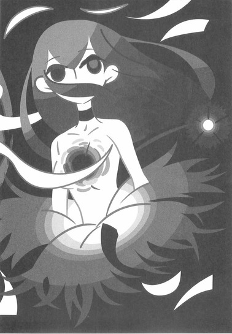
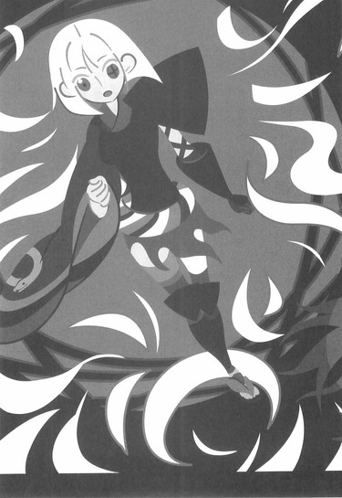
震えていた七花の身体が──ぴたりと止まった。
その視線は臆することなく。
厳しく──七実を睨み据えていた。
「許さないぞ──姉ちゃん」
「髪の長い女が好みだったの？ そういうところも──父さんによく似てるわね。はっきり言って、不愉快だわ。だから」
七花の怒りに──まるで七実は取り合わない。
「草のようにむしるのではなく、花のように散らしてあげる」
「やってみろ──ただしその頃には、姉ちゃんは八つ裂きになっているだろうけどな」
とがめも、もう言葉を挟めなかった。
悪刀『鐚』を蒐集しても──まだ終わっていない。
否、まだ始まってさえいなかったのだ。
姉弟対決──
前日本最強対するところの現日本最強！
鑢七実対するところの鑢七花！
奇策も秘策もなく──いざ尋常に、始め！
「虚刀流七代目当主──鑢七花！ 参る！」
「流派なし、無所属──鑢七実！ 来ませい！」
■ ■
一瞬で、すべてを終わらせる気でいた。
しかし──それは無理だと悟った。
鑢七実は、無理だと悟らざるを得なかった。
──あーあ。
一歩、踏み出したそのときだった──踏み出したその足が、そのまま崩れたのだ。足だけではない──身体中のあちこちが、その刹那に、あっという間にほつれていくのを直感した。
ぼろぼろと──ぼろぼろに崩れていく。
全身という全身の皮膚が破れ、肉がずるずるとはみ出し、身体中から隈なく血が流れ出す。
血が噴き出す。
自分の身体だ──よくわかる。
──そうなのよねえ。
わたしの身体が──わたしの全力に耐えられるはずがないのだ。
わかりきっていたことだ。
だから──これまで、他人の技を見取ってきたのに。
父さんや──七花の動きを見取ってきたのに。
弱くあるために。
か弱くあるために。
少しでも長生きするために──
口の中で、血の味がした。
外側だけではない──どうやら身体の内側も崩壊しているらしい。
すべての血管が破裂していく。
薄い筋肉が千切れ、細い骨が折れる。
全力の、本気の鑢七実。
彼女はほんの一歩さえも──踏み出すことを許されなかった。
草のようにむしられるでもなく。
花のように散るでもなく。
実のように──熟して落ちる。
ひとりでに。
──けど、一回くらい。
攻撃一回分くらいは、なんとかなると思ってたんだけどなあ──
悪刀『鐚』によって無理矢理生命を活性化させた、つけというところだろうか。けれど、それにしたって──
「..................」
体勢が崩れ──視界も狂った。
そして、たまたまその方向にいた奇策士とがめが眼に入る──先ほどまでは見目麗しい長髪だったが、今は肩口で、まるで童子のように髪を切り揃えられた、彼女の姿が──
奇策士は崩れ落ちていく七実に──それを見かねるような渋い表情を向けていた。
──ああ。
あれが──余計だったのか？
ひょっとして、とがめさんはそれを見込んで──わざとわたしの神経を逆撫でするようなことを言ったのかしら──あんな大声で？
あの状況でも──奇策を練っていたというの？
わたしの身体がわたしの全力に耐えられないことを推測して──ならば少しでも消耗させようと。
身体を張って。
殺されるかもしれないのに。
──まさか、ねえ。
それとも──それが覚悟だとでも言うのだろうか。
覚悟の意味なんて。
やっぱり七実にはわからないけれど。
くすり、と七実は笑う。
それもまた悪そうな笑みだったが──そう笑うことで、益々彼女の身体は崩れていく。本堂の床がどんどん近付いてくる──
結局。
結局、わたしは、病で死ぬのか。
──生まれてくるべきではなかった──
──可哀想なこ──
生まれてくるべきではなかった、可哀想な存在。
それがわたしか。
死にぞこないで、生きぞこないで。
本当にもう。
誰かに、殺して欲しかったな──
誰でもよかったけれど、そうね、できれば──
「──姉ちゃん！」
と。
鑢七実が、その眼を閉じかけたとき──七実の身体と床との間に滑り込むように──七実の弟、鑢七花は駆け込んだ。
ぎりぎりで──彼は間に合ったのだ。
──しちか。
──わたしの──おとうと。
やっと、わたしを──ころしてくれる。
「虚刀流最終奥義──『七花八裂（改）』！」
迷いなく。
七花は、その最終奥義を七実に向けて放った。
「..................」
脳内の血管も切れてしまっているのだろう。
意識はすでに朦朧とし、七実の頭の中は靄がかかったようになっている。
それでも──身体は勝手に反応する。
天才性は遺憾なく発揮される。
発揮すれば発揮するほど──耐え切れずに、身体は壊れていくというのに。
四の奥義『柳緑花紅』を捌く。
一の奥義『鏡花水月』をかわす。
五の奥義『飛花落葉』を受ける。
七の奥義『落花狼藉』を避ける。
三の奥義『百花繚乱』を弾く。
六の奥義『錦上添花』を透かす。
二の奥義『花鳥風月』を搦め捕る。
防御しきった。
防御することで、技を直接食らうよりも激しい苦痛が全身を襲ったが──それにも構わず、七実は七花の攻撃を防御し切った。
それが礼儀であるように。
しかし──七花はそれでも諦めなかった。
七実のことを、締めなかった。
彼は二の奥義『花鳥風月』を繰り出したその体勢のまま、無理矢理に法衣の襟を取って、七実の身体に向けて貫手を放ってきた。
──間に合わない。
これは、もう間に合わない。
崩れ落ちていく身体では、その貫手に対する防御が間に合わない──それでも、本来ならばその貫手でさえも、七実の身体を傷つけるには至らないはずだった。
己の力に耐え切れず崩れる身体。
それでも七花の攻撃には──耐え切れるはずだった。
七花は七実に及ばないはずだった。
しかし。
七花の手刀が最後に狙ったのは、七実の胸元だった──胸元。
悪刀『鐚』が刺さっていた位置。
ぽっかりと穴が開いた──その箇所だった。
その穴を目掛けて──その穴に吸い込まれるように、七花の貫手は繰り出される。
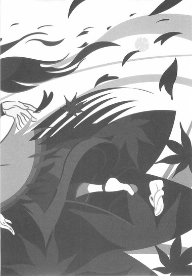
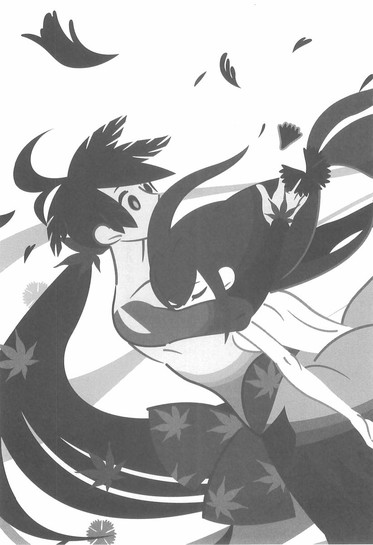
──ああ、そういうこと？
七実は思う。
刀が刀を使おうとすると──こうなってしまうのか。
虚刀流は刀を使わない流派ではない。
刀を使えない流派なのだ。
刀に関する才能を一切持たない、それが虚刀流──なあんだ。
──父さん。
わたしも──やっぱり虚刀流なんじゃない。
「虚刀流──『蒲公英』！」
千丈の堤も一穴から崩れる──！
そんな故事にもあるように。
鑢七花の貫手が、鑢七実の胸に──深く深く、食い込んだ。
それは。
奇しくもそれは──七実が虚刀流の技の中でも、気に入っていた技のひとつだった。
「..................」
床に倒れ伏しそうだった身体を、強引に引き起こされた七実は──そのまま、七花の大きな身体にしなだれかかるようになった。
「七花」
最後の力を振り絞って。
それは振り絞るだけで七実の身体を更に蝕む、本当に最後の力だったが──それでも振り絞って、七実は弟の耳元に囁く。
「七花......よ──よく」
よくぞわたしを殺したわね。
そう言ってあげるつもりだった。
見事──姉を越えてみせた、弟を褒め称えようとした。
病で死ぬことなく。
才能に死ぬことなく。
これで──剣士として死ねる。
刀として死ぬことができる。
人として、死ぬことができる。
虚刀流として。
鑢家の人間として──死ぬことができる。
だから──七花にそう言ってあげようとした。
望み通りに──
自分を殺してくれた、最愛の弟に対して。
「......よくもわたしを殺したわね」
............。
あれ？
噛んじゃった、かな？
終章
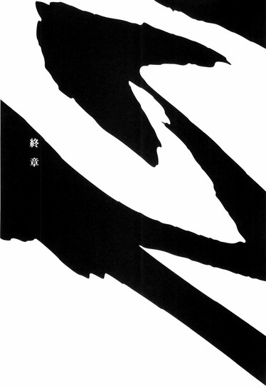
■ ■
「七実は──殺されたかったのだな」
三日後。
奇策士とがめと虚刀流七代目当主鑢七花は、二週間前に四国へ降り立ったのと同じ港に、戻ってきていた。清涼院護剣寺本堂における七実との決戦後──そのまま、来た道を帰ってきたのだ。
剣士の聖地である護剣寺に、鑢七実という化物のような剣士、あるいは剣士のような化物が、短期間とは言え登場したことは、この寺の名を更に誉れ高きものとするだろうが──そして七実と七花の決闘は、もうひとつの聖地、巌流島における長刀と二刀の決戦と並ぶ名勝負として語り継がれることになるのだろうが、しかしそれはあくまでも後の歴史の話であり、僧侶の大半を間引かれてしまった護剣寺のこれから先は思いやられるばかりだが、幸いにも、その後始末はとがめの仕事ではない。
たぶん寺社奉行の仕事となるだろう。
正直、その部署の人間には同情しないでもないが──自らの役目以外に関し、口を出すつもりはとがめにはなかった。
自らの役目。
それはもちろん、刀集めだった。
今、港の待合所で尾張行きの船を待つとがめの手には一本のくないがある。
悪刀『鐚』。
四季崎記紀の作りし完成形変体刀十二本が一本。
それ一本あれば国がひとつ買えるという尋常でない価値を持つ代物ではあるが、まさかこれがそんな貴重な刀だと思う者はいないだろうから、こうして堂々と──矯めつ眇めつしているのだった。
まあ、そもそも悪刀『鐚』は、刀にさえ見えまい。
変わらず──雷を帯びている。
どういう材質で作られているのか......。
これまでとがめは、完成形変体刀の蒐集に成功すれば、その刀は別便で尾張に送っていたのだが、今回こそは尾張に帰ることになったので──帰らねばならなくなったので、また悪刀『鐚』が、賊刀『鎧』や双刀『鎚』あたりと違い、非常に手ごろな大きさだったので（とがめの小さな手にさえ収まる）、自身が運び役を務めることにしたのだ。
「どうしてこんな意味のない戦いに身を投じ、七花をも巻き込もうとするのかと思っておったが──何のことはない、それだけだったのだ。むろん、死にたいとは思っていなかったであろう。そう思うには、七実の身体は弱過ぎた──死ぬことなど、七実にとっては当たり前のことだったであろうからな」
短くなってしまった白髪が気になるように、自分の頭をいじりながら──とがめは言う。
「殺されることも、あるいは何とも思っていなかったであろうが──しかしそれでも、殺されたいと願ったのだ」
苦しみも痛みも付き合いの長い友人。
そしてまた──死も、付き合いの長い友人。
死ぬことも、殺すことも。
殺されることも何とも思わない鑢七実──
そんな彼女が初めて。
殺されたいと──願ったのだ。
「不承島に真庭忍軍虫組の三人がやってきたのが──契機かな。むろんあれほどの強さなのだ、真庭忍軍など相手にもならなかったであろうが、しかし......、その強さに耐えうるだけの身体を、七実は持っていなかったのであろう」
「姉ちゃんに限らないよ」
七花は言う。
とがめの正面に腰掛けてはいるものの──視線は空を向いていて、その眼もどこか空虚だった。
物思いに耽っている──ようだった。
彼らしくもなく。
「おれにもわかったよ。姉ちゃんの強さに耐えられる身体なんて、あるわけないんだ。姉ちゃんの病弱さは神様が与えた罰だって、親父は言ってたけどよ──それ以前の問題だったんだ。膨らませ過ぎた風船みたいなもんだ──だからこそ姉ちゃんは病弱だったんだとおれは思う」
「人間ひとりの身体に収まる天才性ではなかったということだな。ゆえに──他人の強さという弱さを求めた。煮立った熱湯に水を混ぜて温度を下げるように──見稽古を続けていたということか」
「それはおれも知らなかったけどな──」
そうなると、ととがめは思う。
鑢六枝が娘に対し、何一つ虚刀流の技を教えなかったという事実も、意味合いがまた変わってくるだろう。
誰かから何かを教わるには強過ぎた、鑢七実。
もしも、彼女の天才性がそこまでに及ばず。
見稽古を習得できていなければ──果たして七実はどうなっていたのか。
そして──見稽古を習得していることがわかるや否や。
娘を直接──殺そうとした。
自らの妻を殺した疑いをかけられた男。
そして──息子に殺された男。
──そして。
──わたしの父を。
「真庭忍軍との戦いは、七実にとっても最初の実戦だったのであろう。そして──楽勝し、圧勝したであろう。が──その楽勝と圧勝の反動は、七実の身体にとって大きな負担となったに違いあるまい。......そのとき、七実はもう自分は長くないと、思ったのであろう。真庭虫組との戦闘で──己が寿命が大幅に縮まったのを、感じたということだ」
「姉ちゃんは最強だけど」
七花は言う。
「最強過ぎて、やっぱり戦える身体じゃないんだよ」
「............」
「弱い身体を補ってあまりある天才性──でも、その弱い身体は、天才性のせいなんだ。おれはそう思う」
「だから──不承鳥を出たのだな。空気が濃過ぎることもわかっていながら、本土にやってきたのだ。『七花八裂』の弱点云々など、七実にとっては口実に過ぎん。ただ──七実はそなたに殺して欲しかったのだ」
殺されたいと願った。
他の誰でもない。
鑢七花という──弟に。
「そのために、わざわざ刀を蒐集してきて──戦う理由まで作って。ふん。そういう意味ではわかりやすい──」
「殺されたかった──」
「わたしには理解できん感情ではあるがな。しかしそなたならば、わからなくもないのではないか？」
病で死にたくなかった。
天才性ゆえで、死にたくなかった。
人として──当たり前に死にたかった。
生き方を選べなかった彼女が──死に方を選ぼうとした。
「親父にも」
七花は、空を見上げたままで言う。
「姉ちゃんは、親父にも、殺して欲しいと思ってたのかな」
「本人が言っていた通りだ。殺されてもいい──だよ。許容と希望は違うものだ。しかし──そなたが父を愛しているよう」
とがめは言う。
「七実も──父を愛していたのだろう。多少、歪んではいたようだがな」
父親、ということであれば──とがめもまた、思うところがある。
だからその点に関しては、七実の気持ちもわかるのだ。
お互い──父親には苦労させられる。
そういうことだった。
「けどさあ、とがめ」
七花は言う。
視線を──空からとがめに戻して。
「姉ちゃんはおれに殺されたかったのかもしれないけど」
七花は──まるで独り言のように呟く。
「おれは──姉ちゃんを殺したくはなかったよ」
見れば、七花は泣きそうな表情を浮かべていた。
そのことに、とがめは少なからず驚く。
──七花を人間として扱う気があるのなら──
──ちゃんとしてあげて欲しいものですけれどね──
七実の言葉が思い出される。
たぶん、半年前なら違っただろう。
七花は姉を殺しても、何とも思わなかったはずだ──刀として、それを気にすることはなかったはずだ。
敦賀迷彩を斬ったときのように──これまでの対戦相手を迷いなく斬ってきたのと同様に。
敬愛する父親、鑢六枝を斬ったのと同様に。
七実を斬っていたはずだ。
何の感情も持たずに──一本の刀として。
最愛の姉を、殺していただろう。
だけど──今は。
この半年の、とがめと共に旅路を歩み──
七花は刀らしさを失い。
人間らしさを──手に入れた。
だから今──泣きそうな表情を浮かべているのだ。
「............」
ならば今七花が悲しんでいるのはとがめの責任だ。
刀としては折られなかったけれど。
七花が心を折られたのは──とがめの責任だ。
──わたしは。
わたしは間違っていたのだろうか？
七実の言うように──刀を人間扱いするべきではなかったのだろうか？
少なくとも、大乱の英雄、鑢六枝は──仕えていた徹尾家から、人間扱いを受けてはいなかっただろう。
一本の刀として──扱われたはずだ。
それでこその大乱の英雄である。
「どの道、寿命だったのだ。そなたが殺さなかったならば、病で死んでいただけだ。そう思え」
「もしも──悪刀『鐚』をおれが奪わなければ......、姉ちゃんは生き続けることができたのかな？」
「それは違うぞ」
とがめは手元のくないを七花の眼前に示し──諭すように言う。
「この悪刀『鐚』の所為で──七実は死んだのだ。そなたがいつか言った通りだよ。刀が刀を使えるわけがなかったのだ。伊達に悪の一文字を冠されておる刀ではない──結果的にはこの刀の所為で、七実の寿命は更に縮まったということだ」
「元々、その刀があった死霊山ってのは──お化けの集う場所なんだってな」
「お化けというか、幽霊だな。まあわたしは幽霊など信じてはおらぬが......、つまりはこの刀によって死霊山という死に掛けの山を、無理矢理に生かしていたわけだ。だが所詮無理は無理。道理には返らぬよ」
「ってことは、死霊山も滅びるのか......、なんっつーか、刀集めの旅......、おれ達の通った後には草の一本さえ残らないって感じだな」
「ふん。わたし達の前に道はなく、わたし達の後に道は残らず、か──まあ、そこまで無残なものでもないがな」
因幡下酷城は落城し。
出雲三途神社は武装神社ではなくなり。
周防で日本最強は入れ替わり。
薩摩鎧海賊団からその象徴を奪い。
蝦夷踊山の凍空一族は一人を残して全滅した。
そして聖地・清涼院護剣寺も──しばらくは人手不足に悩まされるだろう。
「......嫌になったか？」
とがめはゆるやかな口調で、七花に問うた。
「他人を押しのけてまで刀を集めるのが──もう嫌になってしまったか？」
「............」
「何を横に押しのけても己の意志を通そうというのは、あくまでもわたし一人の覚悟だ。その覚悟はわたしにとって何より大切なものだが、しかし所詮はわたしひとりのものでしかない。もしもそなたが今回のことで、刀集めが嫌になってしまったというのなら──そう言ってくれればよい」
「いや」
その質問に。
しかし七花は──即答した。
いつもと変わらず、とがめの言葉に即答した。
「おれはとがめのために戦うって決めたんだ。それがおれのためでもある。とがめのことが一番大事なんだ──それは、それだけは変わらない。とがめの役に立ちたいんだ」
「............」
「それがおれの──覚悟だよ」
覚悟。
実の姉によって心を折られた七花は──
その引き換えに、覚悟を手に入れたようだった。
つまりそれは、七花は刀としても折れたということなのかもしれない。
けれど、そんな七花を──とがめはこれまで以上に頼もしく思うのだった。
自分が正しかったのか、間違っていたのか。
その答は、これからはっきりするだろう──そしてどちらにしても、後悔だけはすることがないように思われた。
「ふん。そんなことを言って、そなた、髪が短くなってしまったわたしのことを、ちゃんと他の人間と区別できるのであろうな？」
とがめが照れ隠しにそう毒づくと、
「いったいいつの話をしてんだよ──」
と、七花は笑う。
力のない笑みではあったが──ようやく笑った。
「とがめの長い髪は好きだったけどさ──短いのも短いので、いい感じだぜ。姉ちゃんは髪切るの、うまいんだよな」
「確かに──そのようだな。改めて切り揃える必要はなさそうだ」
「触っていいか？」
「好きにするがよい。この髪好きの変態め」
許可を得て、七花はとがめの髪を触る。
撫でるように──肩口で揃えられた、その髪を。
とがめにとって怒りの象徴であり──恨みの顕現であり、また復讐の旗印であったはずの、その髪を。
「あーあ」
七花は──そう言って、そこでため息をつく。
とがめの髪に触れたまま。
姉と違って、似合いもしないが。
それでも憂鬱そうに──嘆息した。
「しかし、これで──おれもとがめと同じ、天涯孤独の身の上ってわけだな。ひとりってのがこんなに寂しいものだとは──思わなかったぜ」
「天涯孤独？」
その言葉に、とがめは眉を顰める。
まったく。
この男は、本当にわかっていない。
「ばかなことを言うでない、七花。わたしが天涯孤独だなどと、そなたこそいったいいつの話をしておるのだ」
「ん？」
「わたしにはそなたがいるし」
──だからいちいち、こういうことを言わせるなと言うのに。
「そなたには、わたしがいるであろう」
■ ■
こうして──ふたりはいよいよ、家鳴将軍家のお膝元、尾張へと帰る。奇策士とがめは、そこで宿敵・尾張幕府直轄内部監察所総監督、否定姫と久方振りの対面を果たすのだが──そこで否定姫から告げられる、四季崎記紀の変体刀に関する新事実は、刀集めのこれからを大きく変えることになる。
残る刀はあと五本。
とがめと七花、ふたりの旅の終わりが──少しずつ近付いていた。
（悪刀『鐚』──蒐集完了）
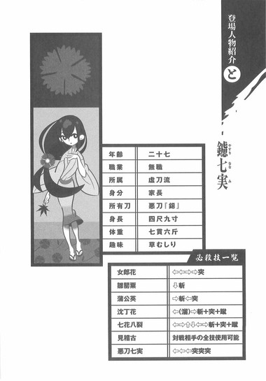
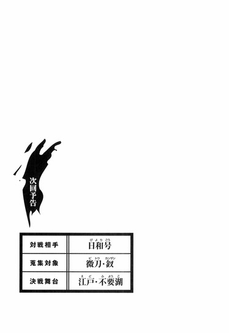
アトガタリ
こういうことを考え出すときりがないんでなるべく考えないようにしているんですけれど、しかしそれにつけても、才能の圧倒的な格差みたいなものを示されたときほどの絶望感ってのは他にないなー、と思います。努力とか勤勉さとかひたむきさとかがんばりとか、そういうあれこれとは一切縁もなく、ただ単純に突き抜けているという強さ、みたいな。天性の才能というのは至極嘘くさい概念ではあるんですけれど、しかし神様の贈り物（呪い？）としか言いようのないそういうものは確かに存在していて、しかも割と頻繁に見かけたりするから驚きです。たいていの人間は自分のことを特別だと思っていて、それゆえにどこかで挫折を経験することになるのですが、しかし逆に言えば自分のことを特別だと思うのは本当は自分が特別でないがゆえの切なる願いみたいなもので、本当に特別な人間というのはその特別さが当たり前であるがゆえに、自身の特別性には気付かないまま別のところで自分を特別だと思って、他の人たちと同じように普通に挫折を経験しているのかもしれません。観客がいれば間違いなくつっこみを入れるシーンではありますが、残念ながら現実の人間に観客はいませんからね。天才には天才ゆえの悩みがある、じゃあないですけれど、下には下があるけれども上には割と上限っていうものがありますよ？みたいな？結局人間は現状に満足したりしないということで、自分が特別だからってそれが何だっつうのよ、というのがそういう特別な人たちの結論かもしれません。自分は自分であるというだけで十分特別なんだから、そういう才能めいたものを持っているのは自分じゃなくて他人のほうがありがたいとか、そこまでいくともう完璧に諦めちゃった人の発言になっちゃうのであれなんですけれど、しかしまあ、その特別な才能の本質を享受するためには、天才じゃないほうがいいですよね。そうでないとすごいもののすごさがわかりません。
本書は刀語の第七巻です。全十二巻の後半突入第一作目ということで、否が応でも盛り上がっていますが、まあ端的に内容を言うなら鑢七実と鑢七花の姉弟対決です。場所は土佐ということで僕の大好きな四国なのですが、しかし四国という土地は書き切れなかった感があり残念です。とはいえその分姉弟対決に力が入っているはずなので、どうぞご覧ください。奇策士とがめによる伝説の刀鍛冶、四季崎記紀の完成形変体刀集めもいよいよ終わりが見えてきたということで、最初はどうなるかと思ったこのシリーズも今では誰よりも楽しんで書いています。イラストレーターの竹さんには、これからもどんどん描き甲斐のある素材を提供できればと思っている感じで、『刀語第七話悪刀・鐚』でした。
あと五冊！
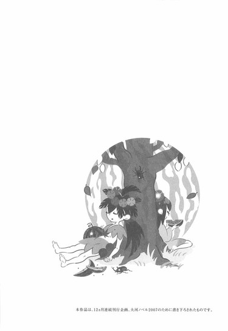
底本：刀語 第七話 悪刀・鐚
西尾維新
２００７年７月２日第１刷発行